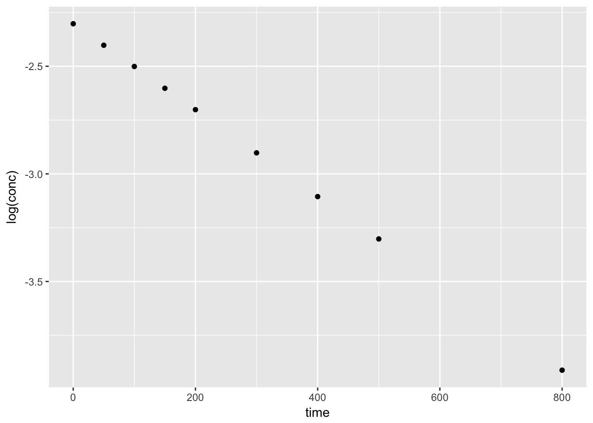

4 Modeling
4.1 Packages used in this chapter
## Warning: package 'broom' was built under R version 3.4.44.2 Introduction
4.2.1 A simple linear regression model
## # A tibble: 4 x 2
## x.line y.line
## <dbl> <dbl>
## 1 1. 2.
## 2 3. 3.
## 3 4. 4.
## 4 6. 5.4.2.1.1 Plot of the data
4.2.1.2 Linear regression
Below, the data is fit to the line
\[ y = mx + b \]
the intercept is assumed unless explicity removed using either y ~ x -1 or y ~ 0 + x.
##
## Call:
## lm(formula = y.line ~ x.line, data = simple_line)
##
## Coefficients:
## (Intercept) x.line
## 1.3462 0.6154##
## Call:
## lm(formula = y.line ~ x.line, data = simple_line)
##
## Residuals:
## 1 2 3 4
## 0.03846 -0.19231 0.19231 -0.03846
##
## Coefficients:
## Estimate Std. Error t value Pr(>|t|)
## (Intercept) 1.34615 0.21414 6.286 0.02438 *
## x.line 0.61538 0.05439 11.314 0.00772 **
## ---
## Signif. codes: 0 '***' 0.001 '**' 0.01 '*' 0.05 '.' 0.1 ' ' 1
##
## Residual standard error: 0.1961 on 2 degrees of freedom
## Multiple R-squared: 0.9846, Adjusted R-squared: 0.9769
## F-statistic: 128 on 1 and 2 DF, p-value: 0.007722## term estimate std.error statistic p.value
## 1 (Intercept) 1.3461538 0.21414478 6.286186 0.024384322
## 2 x.line 0.6153846 0.05439283 11.313708 0.007722123sl_slope <- tidy(m_sl) %>%
filter(term == "x.line") %>%
dplyr::select(estimate)
sl_intercept <- tidy(m_sl) %>%
filter(term == "(Intercept)") %>%
dplyr::select(estimate)
sl_slope## estimate
## 1 0.6153846## estimate
## 1 1.3461544.2.1.3 Plot of the data and linear regression
ggplot(simple_line, aes(x.line, y.line)) +
geom_point() +
geom_abline(slope = sl_slope$estimate, intercept = sl_intercept$estimate) +
ylim(0,6) +
xlim(0,7)If we don’t need the coeficients, we can plot the data and linear regression using ggplot2
4.2.1.4 Finally, let’s add prediction intervals to the graph
## Warning in predict.lm(., interval = "predict"): predictions on current data refer to _future_ responses## # A tibble: 4 x 3
## fit lwr upr
## <dbl> <dbl> <dbl>
## 1 1.96 0.851 3.07
## 2 3.19 2.24 4.14
## 3 3.81 2.86 4.76
## 4 5.04 3.93 6.15## # A tibble: 4 x 5
## x.line y.line fit lwr upr
## <dbl> <dbl> <dbl> <dbl> <dbl>
## 1 1. 2. 1.96 0.851 3.07
## 2 3. 3. 3.19 2.24 4.14
## 3 4. 4. 3.81 2.86 4.76
## 4 6. 5. 5.04 3.93 6.154.2.2 Beyond the linear regression
4.2.2.1 A simple data set for non-linear regression modeling—exponential decay
Example is from Brown, LeMay.
kinetics1 <- tribble(
~time, ~conc,
0., 0.100,
50., 0.0905,
100., 0.0820,
150., 0.0741,
200., 0.0671,
300., 0.0549,
400., 0.0448,
500., 0.0368,
800., 0.0200
)
kinetics1## # A tibble: 9 x 2
## time conc
## <dbl> <dbl>
## 1 0. 0.100
## 2 50. 0.0905
## 3 100. 0.0820
## 4 150. 0.0741
## 5 200. 0.0671
## 6 300. 0.0549
## 7 400. 0.0448
## 8 500. 0.0368
## 9 800. 0.02004.2.2.2 Simple plots of the data
We can plot the orginal data set, conc vs. time to view the trend. A simple test to confirm the data follows a first-order decay, we can plot log(conc) vs. time.

4.2.2.3 Using the nls function
## 7.545743e-08 : 0.002
## 7.088224e-08 : 0.0020017
## 7.088224e-08 : 0.002001699##
## Formula: conc ~ 0.1 * exp(-a1 * time)
##
## Parameters:
## Estimate Std. Error t value Pr(>|t|)
## a1 2.002e-03 2.367e-06 845.8 <2e-16 ***
## ---
## Signif. codes: 0 '***' 0.001 '**' 0.01 '*' 0.05 '.' 0.1 ' ' 1
##
## Residual standard error: 9.413e-05 on 8 degrees of freedom
##
## Number of iterations to convergence: 2
## Achieved convergence tolerance: 2.138e-074.2.2.4 Ploting the model results
Using the augment() function from the broom package, we can plot both the data and predicted values from th nls() model.
## time conc .fitted .resid
## 1 0 0.1000 0.10000000 0.000000e+00
## 2 50 0.0905 0.09047605 2.394510e-05
## 3 100 0.0820 0.08185917 1.408349e-04
## 4 150 0.0741 0.07406294 3.705685e-05
## 5 200 0.0671 0.06700923 9.077090e-05
## 6 300 0.0549 0.05485320 4.680452e-05
## 7 400 0.0448 0.04490237 -1.023678e-04
## 8 500 0.0368 0.03675670 4.329657e-05
## 9 800 0.0200 0.02016223 -1.622264e-04We can also use the output of augment() to plot the residuals
4.2.2.4.1 create a function for the fit
If we want to create a smooth curve of the fit, we need to create a function and use the calculated coefficients from the nls() model. We can then use the stat_function() geom to superimpose the function on the base plot.
conc.fit <- function(t) {
0.1*exp(-t*summary(k1)$coefficients[1])
}
ggplot(kinetics1, mapping = aes(time, conc)) +
geom_point() +
stat_function(fun = conc.fit, linetype = "dashed", colour = "green") +
ggtitle("A kinetics example from first-year chemistry", subtitle = "dashed green line: first-order, exponential decay") +
theme_bw()4.3 Case Stuidies
4.3.1 Load cell output
The data collected in the calibration experiment consisted of a known load, applied to the load cell, and the corresponding deflection of the cell from its nominal position. Forty measurements were made over a range of loads from 150,000 to 3,000,000 units. The data were collected in two sets in order of increasing load. The systematic run order makes it difficult to determine whether or not there was any drift in the load cell or measuring equipment over time. Assuming there is no drift, however, the experiment should provide a good description of the relationship between the load applied to the cell and its response.
library(tidyverse)
load_cell <- read_table2(
"NIST data/PONTIUS.dat", skip = 25, col_names = FALSE, col_types = "dd") %>%
rename(Deflection = X1, Load = X2)
load_cell## # A tibble: 40 x 2
## Deflection Load
## <dbl> <dbl>
## 1 0.110 150000.
## 2 0.220 300000.
## 3 0.329 450000.
## 4 0.439 600000.
## 5 0.548 750000.
## 6 0.657 900000.
## 7 0.766 1050000.
## 8 0.875 1200000.
## 9 0.983 1350000.
## 10 1.09 1500000.
## # ... with 30 more rows4.3.1.1 Selection of Inital Model
First, let’s view the data.
The data looks linear. We can use a simple linear model to view the data
\[ y = mx + b \]
##
## Call:
## lm(formula = Deflection ~ Load, data = load_cell)
##
## Residuals:
## Min 1Q Median 3Q Max
## -0.0042751 -0.0016308 0.0005818 0.0018932 0.0024211
##
## Coefficients:
## Estimate Std. Error t value Pr(>|t|)
## (Intercept) 6.150e-03 7.132e-04 8.623 1.77e-10 ***
## Load 7.221e-07 3.969e-10 1819.289 < 2e-16 ***
## ---
## Signif. codes: 0 '***' 0.001 '**' 0.01 '*' 0.05 '.' 0.1 ' ' 1
##
## Residual standard error: 0.002171 on 38 degrees of freedom
## Multiple R-squared: 1, Adjusted R-squared: 1
## F-statistic: 3.31e+06 on 1 and 38 DF, p-value: < 2.2e-16Wow! an R-squared value of 1! it must be perfect.
4.3.1.1.1 A new package to work with summary information: broom()
broom package is part of the tidyverse and inccludes glance(), tidy, and augment().
These functions create tidy data frames based on the model.
## r.squared adj.r.squared sigma statistic p.value df logLik
## 1 0.9999885 0.9999882 0.002171273 3309811 1.773069e-95 2 189.566
## AIC BIC deviance df.residual
## 1 -373.132 -368.0654 0.0001791481 38## term estimate std.error statistic p.value
## 1 (Intercept) 6.149684e-03 7.132052e-04 8.622602 1.772153e-10
## 2 Load 7.221026e-07 3.969148e-10 1819.288717 1.773069e-95## Deflection Load .fitted .se.fit .resid .hat
## 1 0.11019 150000 0.1144651 0.0006616404 -0.0042750714 0.09285714
## 2 0.21956 300000 0.2227805 0.0006115258 -0.0032204586 0.07932331
## 3 0.32949 450000 0.3310958 0.0005632485 -0.0016058459 0.06729323
## 4 0.43899 600000 0.4394112 0.0005173233 -0.0004212331 0.05676692
## 5 0.54803 750000 0.5477266 0.0004744336 0.0003033797 0.04774436
## 6 0.65694 900000 0.6560420 0.0004354772 0.0008979925 0.04022556
## 7 0.76562 1050000 0.7643574 0.0004016005 0.0012626053 0.03421053
## 8 0.87487 1200000 0.8726728 0.0003741856 0.0021972180 0.02969925
## 9 0.98292 1350000 0.9809882 0.0003547339 0.0019318308 0.02669173
## 10 1.09146 1500000 1.0893036 0.0003445966 0.0021564436 0.02518797
## 11 1.20001 1650000 1.1976189 0.0003445966 0.0023910564 0.02518797
## 12 1.30822 1800000 1.3059343 0.0003547339 0.0022856692 0.02669173
## 13 1.41599 1950000 1.4142497 0.0003741856 0.0017402820 0.02969925
## 14 1.52399 2100000 1.5225651 0.0004016005 0.0014248947 0.03421053
## 15 1.63194 2250000 1.6308805 0.0004354772 0.0010595075 0.04022556
## 16 1.73947 2400000 1.7391959 0.0004744336 0.0002741203 0.04774436
## 17 1.84646 2550000 1.8475113 0.0005173233 -0.0010512669 0.05676692
## 18 1.95392 2700000 1.9558267 0.0005632485 -0.0019066541 0.06729323
## 19 2.06128 2850000 2.0641420 0.0006115258 -0.0028620414 0.07932331
## 20 2.16844 3000000 2.1724574 0.0006616404 -0.0040174286 0.09285714
## 21 0.11052 150000 0.1144651 0.0006616404 -0.0039450714 0.09285714
## 22 0.22018 300000 0.2227805 0.0006115258 -0.0026004586 0.07932331
## 23 0.32939 450000 0.3310958 0.0005632485 -0.0017058459 0.06729323
## 24 0.43886 600000 0.4394112 0.0005173233 -0.0005512331 0.05676692
## 25 0.54798 750000 0.5477266 0.0004744336 0.0002533797 0.04774436
## 26 0.65739 900000 0.6560420 0.0004354772 0.0013479925 0.04022556
## 27 0.76596 1050000 0.7643574 0.0004016005 0.0016026053 0.03421053
## 28 0.87474 1200000 0.8726728 0.0003741856 0.0020672180 0.02969925
## 29 0.98300 1350000 0.9809882 0.0003547339 0.0020118308 0.02669173
## 30 1.09150 1500000 1.0893036 0.0003445966 0.0021964436 0.02518797
## 31 1.20004 1650000 1.1976189 0.0003445966 0.0024210564 0.02518797
## 32 1.30818 1800000 1.3059343 0.0003547339 0.0022456692 0.02669173
## 33 1.41613 1950000 1.4142497 0.0003741856 0.0018802820 0.02969925
## 34 1.52408 2100000 1.5225651 0.0004016005 0.0015148947 0.03421053
## 35 1.63159 2250000 1.6308805 0.0004354772 0.0007095075 0.04022556
## 36 1.73965 2400000 1.7391959 0.0004744336 0.0004541203 0.04774436
## 37 1.84696 2550000 1.8475113 0.0005173233 -0.0005512669 0.05676692
## 38 1.95445 2700000 1.9558267 0.0005632485 -0.0013766541 0.06729323
## 39 2.06177 2850000 2.0641420 0.0006115258 -0.0023720414 0.07932331
## 40 2.16829 3000000 2.1724574 0.0006616404 -0.0041674286 0.09285714
## .sigma .cooksd .std.resid
## 1 0.002073000 0.2187217636 -2.0672413
## 2 0.002130114 0.1029350494 -1.5457875
## 3 0.002183373 0.0211558343 -0.7658028
## 4 0.002199263 0.0012007249 -0.1997554
## 5 0.002199825 0.0005139600 0.1431843
## 6 0.002195253 0.0037346550 0.4221568
## 7 0.002190258 0.0062011368 0.5917142
## 8 0.002169647 0.0161517779 1.0273197
## 9 0.002176743 0.0111520670 0.9018401
## 10 0.002170924 0.0130728091 1.0059197
## 11 0.002164101 0.0160720896 1.1153599
## 12 0.002167204 0.0156114747 1.0670231
## 13 0.002181165 0.0101324217 0.8136771
## 14 0.002187470 0.0078977192 0.6677705
## 15 0.002193224 0.0051989205 0.4980869
## 16 0.002199934 0.0004196031 0.1293749
## 17 0.002193211 0.0074786732 -0.4985275
## 18 0.002176350 0.0298240268 -0.9092535
## 19 0.002145083 0.0812979572 -1.3737509
## 20 0.002088296 0.1931530525 -1.9426563
## 21 0.002092402 0.1862580234 -1.9076675
## 22 0.002154838 0.0671162569 -1.2481938
## 23 0.002181174 0.0238727261 -0.8134912
## 24 0.002198439 0.0020562178 -0.2614035
## 25 0.002200004 0.0003585089 0.1195861
## 26 0.002188761 0.0084155020 0.6337070
## 27 0.002184026 0.0099905466 0.7510537
## 28 0.002173203 0.0142970553 0.9665376
## 29 0.002174730 0.0120948393 0.9391866
## 30 0.002169812 0.0135622837 1.0245786
## 31 0.002163176 0.0164779249 1.1293541
## 32 0.002168365 0.0150698435 1.0483498
## 33 0.002177927 0.0118282359 0.8791347
## 34 0.002185777 0.0089269075 0.7099485
## 35 0.002197195 0.0023314123 0.3335478
## 36 0.002199088 0.0011515906 0.2143284
## 37 0.002198439 0.0020564702 -0.2614196
## 38 0.002187904 0.0155479140 -0.6565048
## 39 0.002162561 0.0558434622 -1.1385558
## 40 0.002079520 0.2078459555 -2.01518994.3.1.2 But wait! What about the residuals?
## 1 2 3 4 5
## -0.0042750714 -0.0032204586 -0.0016058459 -0.0004212331 0.0003033797
## 6 7 8 9 10
## 0.0008979925 0.0012626053 0.0021972180 0.0019318308 0.0021564436
## 11 12 13 14 15
## 0.0023910564 0.0022856692 0.0017402820 0.0014248947 0.0010595075
## 16 17 18 19 20
## 0.0002741203 -0.0010512669 -0.0019066541 -0.0028620414 -0.0040174286
## 21 22 23 24 25
## -0.0039450714 -0.0026004586 -0.0017058459 -0.0005512331 0.0002533797
## 26 27 28 29 30
## 0.0013479925 0.0016026053 0.0020672180 0.0020118308 0.0021964436
## 31 32 33 34 35
## 0.0024210564 0.0022456692 0.0018802820 0.0015148947 0.0007095075
## 36 37 38 39 40
## 0.0004541203 -0.0005512669 -0.0013766541 -0.0023720414 -0.0041674286# ggplot() +
# geom_point(aes(LoadCell$Load, LC.resid)) +
# geom_hline(aes(yintercept=0)) +
# geom_hline(aes(yintercept=+2*(summary(m.LC)$sigma)), linetype = "dashed") +
# geom_hline(aes(yintercept=-2*(summary(m.LC)$sigma)), linetype = "dashed") +
# ggtitle("Deflection Load Residuals", subtitle = "+/- 2(Residual Statndard Deviation)") +
# theme(plot.title = element_text(hjust = 0.5), plot.subtitle = element_text(hjust = 0.5))Using the augment() function we can plot the residuals very easily
## Deflection Load .fitted .se.fit .resid .hat
## 1 0.11019 150000 0.1144651 0.0006616404 -0.0042750714 0.09285714
## 2 0.21956 300000 0.2227805 0.0006115258 -0.0032204586 0.07932331
## 3 0.32949 450000 0.3310958 0.0005632485 -0.0016058459 0.06729323
## 4 0.43899 600000 0.4394112 0.0005173233 -0.0004212331 0.05676692
## 5 0.54803 750000 0.5477266 0.0004744336 0.0003033797 0.04774436
## 6 0.65694 900000 0.6560420 0.0004354772 0.0008979925 0.04022556
## 7 0.76562 1050000 0.7643574 0.0004016005 0.0012626053 0.03421053
## 8 0.87487 1200000 0.8726728 0.0003741856 0.0021972180 0.02969925
## 9 0.98292 1350000 0.9809882 0.0003547339 0.0019318308 0.02669173
## 10 1.09146 1500000 1.0893036 0.0003445966 0.0021564436 0.02518797
## 11 1.20001 1650000 1.1976189 0.0003445966 0.0023910564 0.02518797
## 12 1.30822 1800000 1.3059343 0.0003547339 0.0022856692 0.02669173
## 13 1.41599 1950000 1.4142497 0.0003741856 0.0017402820 0.02969925
## 14 1.52399 2100000 1.5225651 0.0004016005 0.0014248947 0.03421053
## 15 1.63194 2250000 1.6308805 0.0004354772 0.0010595075 0.04022556
## 16 1.73947 2400000 1.7391959 0.0004744336 0.0002741203 0.04774436
## 17 1.84646 2550000 1.8475113 0.0005173233 -0.0010512669 0.05676692
## 18 1.95392 2700000 1.9558267 0.0005632485 -0.0019066541 0.06729323
## 19 2.06128 2850000 2.0641420 0.0006115258 -0.0028620414 0.07932331
## 20 2.16844 3000000 2.1724574 0.0006616404 -0.0040174286 0.09285714
## 21 0.11052 150000 0.1144651 0.0006616404 -0.0039450714 0.09285714
## 22 0.22018 300000 0.2227805 0.0006115258 -0.0026004586 0.07932331
## 23 0.32939 450000 0.3310958 0.0005632485 -0.0017058459 0.06729323
## 24 0.43886 600000 0.4394112 0.0005173233 -0.0005512331 0.05676692
## 25 0.54798 750000 0.5477266 0.0004744336 0.0002533797 0.04774436
## 26 0.65739 900000 0.6560420 0.0004354772 0.0013479925 0.04022556
## 27 0.76596 1050000 0.7643574 0.0004016005 0.0016026053 0.03421053
## 28 0.87474 1200000 0.8726728 0.0003741856 0.0020672180 0.02969925
## 29 0.98300 1350000 0.9809882 0.0003547339 0.0020118308 0.02669173
## 30 1.09150 1500000 1.0893036 0.0003445966 0.0021964436 0.02518797
## 31 1.20004 1650000 1.1976189 0.0003445966 0.0024210564 0.02518797
## 32 1.30818 1800000 1.3059343 0.0003547339 0.0022456692 0.02669173
## 33 1.41613 1950000 1.4142497 0.0003741856 0.0018802820 0.02969925
## 34 1.52408 2100000 1.5225651 0.0004016005 0.0015148947 0.03421053
## 35 1.63159 2250000 1.6308805 0.0004354772 0.0007095075 0.04022556
## 36 1.73965 2400000 1.7391959 0.0004744336 0.0004541203 0.04774436
## 37 1.84696 2550000 1.8475113 0.0005173233 -0.0005512669 0.05676692
## 38 1.95445 2700000 1.9558267 0.0005632485 -0.0013766541 0.06729323
## 39 2.06177 2850000 2.0641420 0.0006115258 -0.0023720414 0.07932331
## 40 2.16829 3000000 2.1724574 0.0006616404 -0.0041674286 0.09285714
## .sigma .cooksd .std.resid
## 1 0.002073000 0.2187217636 -2.0672413
## 2 0.002130114 0.1029350494 -1.5457875
## 3 0.002183373 0.0211558343 -0.7658028
## 4 0.002199263 0.0012007249 -0.1997554
## 5 0.002199825 0.0005139600 0.1431843
## 6 0.002195253 0.0037346550 0.4221568
## 7 0.002190258 0.0062011368 0.5917142
## 8 0.002169647 0.0161517779 1.0273197
## 9 0.002176743 0.0111520670 0.9018401
## 10 0.002170924 0.0130728091 1.0059197
## 11 0.002164101 0.0160720896 1.1153599
## 12 0.002167204 0.0156114747 1.0670231
## 13 0.002181165 0.0101324217 0.8136771
## 14 0.002187470 0.0078977192 0.6677705
## 15 0.002193224 0.0051989205 0.4980869
## 16 0.002199934 0.0004196031 0.1293749
## 17 0.002193211 0.0074786732 -0.4985275
## 18 0.002176350 0.0298240268 -0.9092535
## 19 0.002145083 0.0812979572 -1.3737509
## 20 0.002088296 0.1931530525 -1.9426563
## 21 0.002092402 0.1862580234 -1.9076675
## 22 0.002154838 0.0671162569 -1.2481938
## 23 0.002181174 0.0238727261 -0.8134912
## 24 0.002198439 0.0020562178 -0.2614035
## 25 0.002200004 0.0003585089 0.1195861
## 26 0.002188761 0.0084155020 0.6337070
## 27 0.002184026 0.0099905466 0.7510537
## 28 0.002173203 0.0142970553 0.9665376
## 29 0.002174730 0.0120948393 0.9391866
## 30 0.002169812 0.0135622837 1.0245786
## 31 0.002163176 0.0164779249 1.1293541
## 32 0.002168365 0.0150698435 1.0483498
## 33 0.002177927 0.0118282359 0.8791347
## 34 0.002185777 0.0089269075 0.7099485
## 35 0.002197195 0.0023314123 0.3335478
## 36 0.002199088 0.0011515906 0.2143284
## 37 0.002198439 0.0020564702 -0.2614196
## 38 0.002187904 0.0155479140 -0.6565048
## 39 0.002162561 0.0558434622 -1.1385558
## 40 0.002079520 0.2078459555 -2.0151899ggplot(load_cell_fit) +
geom_point(aes(Load, .resid)) +
ggtitle("Residuals from linear model of the load cell")The residuals from a good model would be random. Although not necessary, we can plot a histogram or qqplot to demonstrate the residuals are not following a normal distribution.
## `stat_bin()` using `bins = 30`. Pick better value with `binwidth`.4.3.1.3 Model Refinement
\[ D = \beta_0 + \beta_1 L + \beta_2 L^2 + \varepsilon \]
We can use the linear model function, lm(), by creating a new variable \(L^2\).
## # A tibble: 40 x 3
## Deflection Load Load_squared
## <dbl> <dbl> <dbl>
## 1 0.110 150000. 2.25e10
## 2 0.220 300000. 9.00e10
## 3 0.329 450000. 2.02e11
## 4 0.439 600000. 3.60e11
## 5 0.548 750000. 5.62e11
## 6 0.657 900000. 8.10e11
## 7 0.766 1050000. 1.10e12
## 8 0.875 1200000. 1.44e12
## 9 0.983 1350000. 1.82e12
## 10 1.09 1500000. 2.25e12
## # ... with 30 more rows##
## Call:
## lm(formula = Deflection ~ Load + Load_squared, data = load_cell_2)
##
## Residuals:
## Min 1Q Median 3Q Max
## -4.468e-04 -1.578e-04 3.817e-05 1.088e-04 4.235e-04
##
## Coefficients:
## Estimate Std. Error t value Pr(>|t|)
## (Intercept) 6.736e-04 1.079e-04 6.24 2.97e-07 ***
## Load 7.321e-07 1.578e-10 4638.65 < 2e-16 ***
## Load_squared -3.161e-15 4.867e-17 -64.95 < 2e-16 ***
## ---
## Signif. codes: 0 '***' 0.001 '**' 0.01 '*' 0.05 '.' 0.1 ' ' 1
##
## Residual standard error: 0.0002052 on 37 degrees of freedom
## Multiple R-squared: 1, Adjusted R-squared: 1
## F-statistic: 1.853e+08 on 2 and 37 DF, p-value: < 2.2e-16## Deflection Load Load_squared .fitted .se.fit .resid
## 1 0.11019 150000 2.2500e+10 0.1104113 8.834303e-05 -2.213214e-04
## 2 0.21956 300000 9.0000e+10 0.2200068 7.185366e-05 -4.468402e-04
## 3 0.32949 450000 2.0250e+11 0.3294601 5.888246e-05 2.987782e-05
## 4 0.43899 600000 3.6000e+11 0.4387712 4.986859e-05 2.188327e-04
## 5 0.54803 750000 5.6250e+11 0.5479400 4.495244e-05 9.002444e-05
## 6 0.65694 900000 8.1000e+11 0.6569665 4.354343e-05 -2.654699e-05
## 7 0.76562 1050000 1.1025e+12 0.7658509 4.437259e-05 -2.308816e-04
## 8 0.87487 1200000 1.4400e+12 0.8745930 4.609026e-05 2.770207e-04
## 9 0.98292 1350000 1.8225e+12 0.9831928 4.770597e-05 -2.728402e-04
## 10 1.09146 1500000 2.2500e+12 1.0916505 4.864177e-05 -1.904643e-04
## 11 1.20001 1650000 2.7225e+12 1.1999659 4.864177e-05 4.414850e-05
## 12 1.30822 1800000 3.2400e+12 1.3081390 4.770597e-05 8.099812e-05
## 13 1.41599 1950000 3.8025e+12 1.4161699 4.609026e-05 -1.799154e-04
## 14 1.52399 2100000 4.4100e+12 1.5240586 4.437259e-05 -6.859211e-05
## 15 1.63194 2250000 5.0625e+12 1.6318050 4.354343e-05 1.349680e-04
## 16 1.73947 2400000 5.7600e+12 1.7394092 4.495244e-05 6.076504e-05
## 17 1.84646 2550000 6.5025e+12 1.8468712 4.986859e-05 -4.112011e-04
## 18 1.95392 2700000 7.2900e+12 1.9541909 5.888246e-05 -2.709305e-04
## 19 2.06128 2850000 8.1225e+12 2.0613684 7.185366e-05 -8.842293e-05
## 20 2.16844 3000000 9.0000e+12 2.1684037 8.834303e-05 3.632143e-05
## 21 0.11052 150000 2.2500e+10 0.1104113 8.834303e-05 1.086786e-04
## 22 0.22018 300000 9.0000e+10 0.2200068 7.185366e-05 1.731598e-04
## 23 0.32939 450000 2.0250e+11 0.3294601 5.888246e-05 -7.012218e-05
## 24 0.43886 600000 3.6000e+11 0.4387712 4.986859e-05 8.883271e-05
## 25 0.54798 750000 5.6250e+11 0.5479400 4.495244e-05 4.002444e-05
## 26 0.65739 900000 8.1000e+11 0.6569665 4.354343e-05 4.234530e-04
## 27 0.76596 1050000 1.1025e+12 0.7658509 4.437259e-05 1.091184e-04
## 28 0.87474 1200000 1.4400e+12 0.8745930 4.609026e-05 1.470207e-04
## 29 0.98300 1350000 1.8225e+12 0.9831928 4.770597e-05 -1.928402e-04
## 30 1.09150 1500000 2.2500e+12 1.0916505 4.864177e-05 -1.504643e-04
## 31 1.20004 1650000 2.7225e+12 1.1999659 4.864177e-05 7.414850e-05
## 32 1.30818 1800000 3.2400e+12 1.3081390 4.770597e-05 4.099812e-05
## 33 1.41613 1950000 3.8025e+12 1.4161699 4.609026e-05 -3.991541e-05
## 34 1.52408 2100000 4.4100e+12 1.5240586 4.437259e-05 2.140789e-05
## 35 1.63159 2250000 5.0625e+12 1.6318050 4.354343e-05 -2.150320e-04
## 36 1.73965 2400000 5.7600e+12 1.7394092 4.495244e-05 2.407650e-04
## 37 1.84696 2550000 6.5025e+12 1.8468712 4.986859e-05 8.879887e-05
## 38 1.95445 2700000 7.2900e+12 1.9541909 5.888246e-05 2.590695e-04
## 39 2.06177 2850000 8.1225e+12 2.0613684 7.185366e-05 4.015771e-04
## 40 2.16829 3000000 9.0000e+12 2.1684037 8.834303e-05 -1.136786e-04
## .hat .sigma .cooksd .std.resid
## 1 0.18538961 0.0002039531 0.1083557670 -1.1951404
## 2 0.12264183 0.0001922123 0.2518888277 -2.3250603
## 3 0.08235931 0.0002079426 0.0006913290 0.1520138
## 4 0.05907382 0.0002045811 0.0253004370 1.0995244
## 5 0.04800068 0.0002074384 0.0033987136 0.4496893
## 6 0.04503873 0.0002079583 0.0002755909 -0.1324015
## 7 0.04677033 0.0002042395 0.0217256885 -1.1525531
## 8 0.05046138 0.0002025394 0.0340077449 1.3855631
## 9 0.05406129 0.0002026849 0.0356120360 -1.3672481
## 10 0.05620301 0.0002054251 0.0181237925 -0.9555308
## 11 0.05620301 0.0002078697 0.0009737642 0.2214864
## 12 0.05406129 0.0002075440 0.0031385560 0.4058952
## 13 0.05046138 0.0002057188 0.0143446582 -0.8998756
## 14 0.04677033 0.0002076778 0.0019175348 -0.3424095
## 15 0.04503873 0.0002067300 0.0071235449 0.6731448
## 16 0.04800068 0.0002077485 0.0015484646 0.3035330
## 17 0.05907382 0.0001956411 0.0893330479 -2.0660791
## 18 0.08235931 0.0002025961 0.0568463516 -1.3784528
## 19 0.12264183 0.0002074117 0.0098635717 -0.4600943
## 20 0.18538961 0.0002078994 0.0029183068 0.1961365
## 21 0.18538961 0.0002070372 0.0261272044 0.5868666
## 22 0.12264183 0.0002057130 0.0378266955 0.9010087
## 23 0.08235931 0.0002076495 0.0038080074 -0.3567710
## 24 0.05907382 0.0002074468 0.0041691675 0.4463397
## 25 0.04800068 0.0002078952 0.0006718065 0.1999297
## 26 0.04503873 0.0001950675 0.0701204501 2.1119458
## 27 0.04677033 0.0002071719 0.0048527858 0.5447155
## 28 0.05046138 0.0002064820 0.0095787822 0.7353473
## 29 0.05406129 0.0002053659 0.0177899720 -0.9663547
## 30 0.05620301 0.0002063997 0.0113106830 -0.7548568
## 31 0.05620301 0.0002076183 0.0027467977 0.3719919
## 32 0.05406129 0.0002078889 0.0008040960 0.2054485
## 33 0.05046138 0.0002078955 0.0007060488 -0.1996433
## 34 0.04677033 0.0002079755 0.0001867854 0.1068675
## 35 0.04503873 0.0002047490 0.0180817416 -1.0724586
## 36 0.04800068 0.0002039013 0.0243097555 1.2026674
## 37 0.05907382 0.0002074473 0.0041659922 0.4461697
## 38 0.08235931 0.0002030652 0.0519780155 1.3181064
## 39 0.12264183 0.0001953495 0.2034427365 2.0895409
## 40 0.18538961 0.0002069456 0.0285865876 -0.6138667ggplot(load_cell_fit_2) +
geom_point(aes(Load, .resid)) +
ggtitle("Residuals from refined model of the load cell")4.3.1.3.1 Could we have used a non-linear least squares fit model?
load_cell_model_3 <- nls(Deflection ~ b0 + b1*Load + b2*Load^2, load_cell_2, start = c(b0 = 0, b1 = 0,b2 = 0))
summary(load_cell_model_3)##
## Formula: Deflection ~ b0 + b1 * Load + b2 * Load^2
##
## Parameters:
## Estimate Std. Error t value Pr(>|t|)
## b0 6.736e-04 1.079e-04 6.24 2.97e-07 ***
## b1 7.321e-07 1.578e-10 4638.65 < 2e-16 ***
## b2 -3.161e-15 4.867e-17 -64.95 < 2e-16 ***
## ---
## Signif. codes: 0 '***' 0.001 '**' 0.01 '*' 0.05 '.' 0.1 ' ' 1
##
## Residual standard error: 0.0002052 on 37 degrees of freedom
##
## Number of iterations to convergence: 1
## Achieved convergence tolerance: 1.328e-06The results are identical.
## `stat_bin()` using `bins = 30`. Pick better value with `binwidth`.4.3.2 Thermal expansion of copper
from section 4.6.4. Thermal Expansion of Copper Case Study
This case study illustrates the use of a class of nonlinear models called rational function models. The data set used is the thermal expansion of copper related to temperature.
## Parsed with column specification:
## cols(
## X1 = col_double(),
## X2 = col_double()
## )
4.3.3 Quadratic/Quadratic (Q/Q) model
The NIST handbook has a procedure for calculing estimates for the model, below, I just used guess values for the equation \[ y = \frac{(A0 + A1 \cdot x + A2 \cdot x^2)}{(1 + B1\cdot x + B2 \cdot X^2)} \]
model_Cu <- nls(Cu_CTE ~ ((a0 + a1*temp_K + a2*temp_K^2)/(1 + b1*temp_K + b2*temp_K^2)),
CTECu, start = list(a0 = 0, a1 = -1, a2 = -1, b1 = 0, b2 = 0), trace = T)## 1.344556e+13 : 0 -1 -1 0 0
## 1697329 : -3.351400e+00 1.797879e-01 -5.745645e-04 7.915158e-07 -3.877688e-10
## 177589.3 : -3.319661e+00 1.750319e-01 -3.592189e-04 1.144561e-03 -6.445222e-07
## 32411.82 : -4.730736e+00 2.146213e-01 -3.235814e-04 3.851759e-03 -2.232626e-06
## 5374.946 : -6.413603e+00 2.683958e-01 -2.844465e-04 7.799104e-03 -4.266107e-06
## 690.5713 : -6.901674e+00 2.867489e-01 -1.804611e-04 1.009256e-02 -3.131612e-06
## 217.1164 : -5.970973e+00 2.481232e-01 1.250216e-04 8.918691e-03 1.150181e-05
## 114.0929 : -3.145220e+00 1.061122e-01 1.610442e-03 4.783451e-03 8.707152e-05
## 64.59622 : 3.1477349163 -0.2965983768 0.0078946767 0.0013004690 0.0003974542
## 42.78158 : 9.3230025114 -0.8210512798 0.0188009501 0.0103976361 0.0009147904
## 34.34313 : 11.848742450 -1.098105431 0.025888747 0.024139632 0.001231568
## 33.5614 : 11.838847499 -1.129134608 0.027249383 0.029538247 0.001286009
## 33.55298 : 12.220405792 -1.169396827 0.028259353 0.031296606 0.001332281
## 33.55278 : 11.988150281 -1.149285630 0.027831681 0.030880324 0.001312172
## 33.55273 : 12.165006923 -1.165285413 0.028186412 0.031296535 0.001328754
## 33.55271 : 12.034452089 -1.153533233 0.027926998 0.030997296 0.001316621
## 33.55269 : 12.131480095 -1.162274660 0.028120094 0.031220657 0.001325652
## 33.55268 : 12.059618930 -1.155801947 0.027977138 0.031055397 0.001318966
## 33.55268 : 12.112946981 -1.160605895 0.028083247 0.031178098 0.001323928
## 33.55268 : 12.073406215 -1.157044238 0.028004583 0.031087151 0.001320249
## 33.55267 : 12.102793316 -1.159691514 0.028063056 0.031154770 0.001322984
## 33.55267 : 12.081046435 -1.157732650 0.028019791 0.031104752 0.001320961
## 33.55267 : 12.097167203 -1.159184809 0.028051866 0.031141839 0.001322461
## 33.55267 : 12.085177311 -1.158104731 0.028028009 0.031114250 0.001321345
## 33.55267 : 12.094068505 -1.158905649 0.028045699 0.031134704 0.001322172
## 33.55267 : 12.087436601 -1.158308224 0.028032503 0.031119442 0.001321555
## 33.55267 : 12.092386536 -1.158754113 0.028042351 0.031130832 0.001322016
## 33.55267 : 12.088732963 -1.158425030 0.028035083 0.031122431 0.001321676
## 33.55267 : 12.091445289 -1.158669369 0.028040481 0.031128672 0.001321928
## 33.55267 : 12.08942043 -1.15848695 0.02803645 0.03112401 0.00132174
## 33.55267 : 12.090900623 -1.158620261 0.028039395 0.031127413 0.001321877
## 33.55267 : 12.089833503 -1.158524186 0.028037274 0.031124964 0.001321778
## 33.55267 : 12.090620445 -1.158595059 0.028038839 0.031126773 0.001321851##
## Formula: Cu_CTE ~ ((a0 + a1 * temp_K + a2 * temp_K^2)/(1 + b1 * temp_K +
## b2 * temp_K^2))
##
## Parameters:
## Estimate Std. Error t value Pr(>|t|)
## a0 12.0906204 4.9457268 2.445 0.01525 *
## a1 -1.1585951 0.4459281 -2.598 0.00997 **
## a2 0.0280388 0.0099339 2.823 0.00518 **
## b1 0.0311268 0.0123461 2.521 0.01237 *
## b2 0.0013219 0.0004639 2.849 0.00478 **
## ---
## Signif. codes: 0 '***' 0.001 '**' 0.01 '*' 0.05 '.' 0.1 ' ' 1
##
## Residual standard error: 0.3811 on 231 degrees of freedom
##
## Number of iterations to convergence: 32
## Achieved convergence tolerance: 8.018e-06## sigma isConv finTol logLik AIC BIC deviance
## 1 0.3811163 TRUE 8.017872e-06 -104.6851 221.3702 242.1532 33.55267
## df.residual
## 1 231## temp_K Cu_CTE .fitted .resid
## 1 24.41 0.591 0.20263740 0.388362604
## 2 34.82 1.547 1.55799629 -0.010996290
## 3 44.09 2.902 3.13916746 -0.237167465
## 4 45.07 2.894 3.30744524 -0.413445244
## 5 54.98 4.703 4.94210005 -0.239100048
## 6 65.51 6.307 6.48782610 -0.180826097
## 7 70.53 7.030 7.14914778 -0.119147778
## 8 75.70 7.898 7.78154503 0.116454973
## 9 89.57 9.470 9.25903236 0.210967637
## 10 91.14 9.484 9.40826472 0.075735280
## 11 96.40 10.072 9.88458561 0.187414386
## 12 97.19 10.163 9.95311700 0.209882997
## 13 114.26 11.615 11.26656602 0.348433983
## 14 120.25 12.005 11.66166565 0.343334345
## 15 127.08 12.478 12.07731227 0.400687732
## 16 133.55 12.982 12.44039495 0.541605047
## 17 133.61 12.970 12.44363272 0.526367277
## 18 158.67 13.926 13.62043804 0.305561962
## 19 172.74 14.452 14.15567440 0.296325603
## 20 171.31 14.404 14.10466048 0.299339518
## 21 202.14 15.190 15.06560294 0.124397055
## 22 220.55 15.550 15.52648312 0.023516883
## 23 221.05 15.528 15.53805198 -0.010051982
## 24 221.39 15.499 15.54589234 -0.046892338
## 25 250.99 16.131 16.15515873 -0.024158729
## 26 268.99 16.438 16.46610887 -0.028108874
## 27 271.80 16.387 16.51126548 -0.124265483
## 28 271.97 16.549 16.51397008 0.035029917
## 29 321.31 16.872 17.18698756 -0.314987562
## 30 321.69 16.830 17.19142843 -0.361428433
## 31 330.14 16.926 17.28772364 -0.361723642
## 32 333.03 16.907 17.31961419 -0.412614189
## 33 333.47 16.966 17.32442437 -0.358424366
## 34 340.77 17.060 17.40253947 -0.342539470
## 35 345.65 17.122 17.45304116 -0.331041159
## 36 373.11 17.311 17.71409685 -0.403096846
## 37 373.79 17.355 17.72010437 -0.365104372
## 38 411.82 17.668 18.02623331 -0.358233309
## 39 419.51 17.767 18.08174912 -0.314749116
## 40 421.59 17.803 18.09643544 -0.293435444
## 41 422.02 17.765 18.09945445 -0.334454452
## 42 422.47 17.768 18.10260764 -0.334607642
## 43 422.61 17.736 18.10358734 -0.367587337
## 44 441.75 17.858 18.23197297 -0.373972966
## 45 447.41 17.877 18.26793801 -0.390938005
## 46 448.70 17.912 18.27601424 -0.364014242
## 47 472.89 18.046 18.41967798 -0.373677978
## 48 476.69 18.085 18.44098172 -0.355981723
## 49 522.47 18.291 18.67429455 -0.383294553
## 50 522.62 18.357 18.67499461 -0.317994608
## 51 524.43 18.426 18.68341166 -0.257411661
## 52 546.75 18.584 18.78280566 -0.198805658
## 53 549.53 18.610 18.79464198 -0.184641978
## 54 575.29 18.870 18.89908047 -0.029080472
## 55 576.00 18.795 18.90183163 -0.106831626
## 56 625.55 19.111 19.07892819 0.032071807
## 57 20.15 0.367 0.05976671 0.307233295
## 58 28.78 0.796 0.65887516 0.137124838
## 59 29.57 0.892 0.76317614 0.128823858
## 60 37.41 1.903 1.98987963 -0.086879626
## 61 39.12 2.150 2.28182032 -0.131820319
## 62 50.24 3.697 4.17855148 -0.481551482
## 63 61.38 5.870 5.90731429 -0.037314289
## 64 66.25 6.421 6.58833329 -0.167333292
## 65 73.42 7.422 7.50855925 -0.086559249
## 66 95.52 9.944 9.80734632 0.136653680
## 67 107.32 11.023 10.76867928 0.254320724
## 68 122.04 11.870 11.77402819 0.095971811
## 69 134.03 12.786 12.46623314 0.319766858
## 70 163.19 14.067 13.80079176 0.266208244
## 71 163.48 13.974 13.81207896 0.161921040
## 72 175.70 14.462 14.25903034 0.202969659
## 73 179.86 14.464 14.39938426 0.064615736
## 74 211.27 15.381 15.30300305 0.077996951
## 75 217.78 15.483 15.46153988 0.021460123
## 76 219.14 15.590 15.49360705 0.096392951
## 77 262.52 16.075 16.35879653 -0.283796530
## 78 268.01 16.347 16.45015753 -0.103157525
## 79 268.62 16.181 16.46009888 -0.279098880
## 80 336.25 16.915 17.35454484 -0.439544844
## 81 337.23 17.003 17.36505255 -0.362052548
## 82 339.33 16.978 17.38737853 -0.409378534
## 83 427.38 17.756 18.13660333 -0.380603334
## 84 428.58 17.808 18.14479952 -0.336799522
## 85 432.68 17.868 18.17247767 -0.304477673
## 86 528.99 18.481 18.70437208 -0.223372077
## 87 531.08 18.486 18.71386351 -0.227863507
## 88 628.34 19.090 19.08809722 0.001902777
## 89 253.24 16.062 16.19621410 -0.134214101
## 90 273.13 16.337 16.53234301 -0.195343011
## 91 273.66 16.345 16.54069023 -0.195690232
## 92 282.10 16.388 16.66974746 -0.281747456
## 93 346.62 17.159 17.46292119 -0.303921190
## 94 347.19 17.116 17.46870293 -0.352702926
## 95 348.78 17.164 17.48473760 -0.320737599
## 96 351.18 17.123 17.50868379 -0.385683795
## 97 450.10 17.979 18.28472932 -0.305729323
## 98 450.35 17.974 18.28628016 -0.312280163
## 99 451.92 18.007 18.29598212 -0.288982125
## 100 455.56 17.993 18.31823099 -0.325230985
## 101 552.22 18.523 18.80598605 -0.282986051
## 102 553.56 18.669 18.81159745 -0.142597449
## 103 555.74 18.617 18.82067084 -0.203670839
## 104 652.59 19.371 19.16459642 0.206403582
## 105 656.20 19.330 19.17551650 0.154483498
## 106 14.13 0.080 0.77348741 -0.693487408
## 107 20.41 0.248 0.05662611 0.191373893
## 108 31.30 1.089 1.00816471 0.080835292
## 109 33.84 1.418 1.39956756 0.018432442
## 110 39.70 2.278 2.38155051 -0.103550513
## 111 48.83 3.624 3.94438216 -0.320382160
## 112 54.50 4.574 4.86657271 -0.292572712
## 113 60.41 5.556 5.76612933 -0.210129333
## 114 72.77 7.267 7.42904396 -0.162043958
## 115 75.25 7.695 7.72838906 -0.033389062
## 116 86.84 9.136 8.99136369 0.144636308
## 117 94.88 9.959 9.75056787 0.208432127
## 118 96.40 9.957 9.88458561 0.072414386
## 119 117.37 11.600 11.47547190 0.124528102
## 120 139.08 13.138 12.72947330 0.408526704
## 121 147.73 13.564 13.14657103 0.417428974
## 122 158.63 13.871 13.61880392 0.252196080
## 123 161.84 13.994 13.74780396 0.246196039
## 124 192.11 14.947 14.78222963 0.164770366
## 125 206.76 15.473 15.18803137 0.284968629
## 126 209.07 15.379 15.24746384 0.131536163
## 127 213.32 15.455 15.35384680 0.101153203
## 128 226.44 15.908 15.65987906 0.248120943
## 129 237.12 16.114 15.88663535 0.227364654
## 130 330.90 17.071 17.29616030 -0.225160304
## 131 358.72 17.135 17.58196286 -0.446962856
## 132 370.77 17.282 17.69326577 -0.411265769
## 133 372.72 17.368 17.71064206 -0.342642062
## 134 396.24 17.483 17.90752311 -0.424523105
## 135 416.59 17.764 18.06089749 -0.296897490
## 136 484.02 18.185 18.48117310 -0.296173098
## 137 495.47 18.271 18.54167975 -0.270679752
## 138 514.78 18.236 18.63788133 -0.401881325
## 139 515.65 18.237 18.64205311 -0.405053108
## 140 519.47 18.523 18.66021207 -0.137212071
## 141 544.47 18.627 18.77301150 -0.146011498
## 142 560.11 18.665 18.83865465 -0.173654648
## 143 620.77 19.086 19.06303418 0.022965825
## 144 18.97 0.214 0.09784057 0.116159433
## 145 28.93 0.943 0.67826891 0.264731089
## 146 33.91 1.429 1.41076863 0.018231366
## 147 40.03 2.241 2.43840011 -0.197400110
## 148 44.66 2.951 3.23712804 -0.286128037
## 149 49.87 3.782 4.11738756 -0.335387561
## 150 55.16 4.757 4.97031350 -0.213313499
## 151 60.90 5.602 5.83768000 -0.235680001
## 152 72.08 7.169 7.34380175 -0.174801749
## 153 85.15 8.920 8.82027800 0.099721997
## 154 97.06 10.055 9.94189178 0.113108223
## 155 119.63 12.035 11.62215376 0.412846236
## 156 133.27 12.861 12.42525502 0.435744978
## 157 143.84 13.436 12.96400254 0.471997455
## 158 161.91 14.167 13.75056958 0.416430418
## 159 180.67 14.755 14.42607069 0.328929310
## 160 198.44 15.168 14.96397105 0.204028954
## 161 226.86 15.651 15.66915570 -0.018155704
## 162 229.65 15.746 15.73001114 0.015988863
## 163 258.27 16.216 16.28565218 -0.069652183
## 164 273.77 16.445 16.54241898 -0.097418978
## 165 339.15 16.965 17.38547498 -0.420474978
## 166 350.13 17.121 17.49824509 -0.377245093
## 167 362.75 17.206 17.61995849 -0.413958492
## 168 371.03 17.250 17.69559252 -0.445592517
## 169 393.32 17.339 17.88428738 -0.545287384
## 170 448.53 17.793 18.27495246 -0.481952459
## 171 473.78 18.123 18.42469678 -0.301696776
## 172 511.12 18.490 18.62018208 -0.130182079
## 173 524.70 18.566 18.68466247 -0.118662470
## 174 548.75 18.645 18.79133263 -0.146332628
## 175 551.64 18.706 18.80354911 -0.097549110
## 176 574.02 18.924 18.89414305 0.029856952
## 177 623.86 19.100 19.07333565 0.026664346
## 178 21.46 0.375 0.06146604 0.313533960
## 179 24.33 0.471 0.19669499 0.274305007
## 180 33.43 1.504 1.33435088 0.169649123
## 181 39.22 2.204 2.29899563 -0.094995630
## 182 44.18 2.813 3.15464924 -0.341649241
## 183 55.02 4.765 4.94837488 -0.183374875
## 184 94.33 9.835 9.70136218 0.133637823
## 185 96.44 10.040 9.88807384 0.151926161
## 186 118.82 11.946 11.57006498 0.375935018
## 187 128.48 12.596 12.15828826 0.437711736
## 188 141.94 13.303 12.87190265 0.431097345
## 189 156.92 13.922 13.54830088 0.373699124
## 190 171.65 14.440 14.11685477 0.323145234
## 191 190.00 14.951 14.71932283 0.231677171
## 192 223.26 15.627 15.58863528 0.038364719
## 193 223.88 15.639 15.60266672 0.036333280
## 194 231.50 15.814 15.76964133 0.044358666
## 195 265.05 16.315 16.40132663 -0.086326629
## 196 269.44 16.334 16.47339806 -0.139398063
## 197 271.78 16.430 16.51094709 -0.080947092
## 198 273.46 16.423 16.53754381 -0.114543806
## 199 334.61 17.024 17.33683230 -0.312832301
## 200 339.79 17.009 17.39223463 -0.383234635
## 201 349.52 17.165 17.49215378 -0.327153784
## 202 358.18 17.134 17.57681079 -0.442810793
## 203 377.98 17.349 17.75667290 -0.407672903
## 204 394.77 17.576 17.89586620 -0.319866198
## 205 429.66 17.848 18.15213896 -0.304138963
## 206 468.22 18.090 18.39304523 -0.303045226
## 207 487.27 18.276 18.49862363 -0.222623626
## 208 519.54 18.404 18.66054244 -0.256542438
## 209 523.03 18.519 18.67690613 -0.157906127
## 210 612.99 19.133 19.03665298 0.096347018
## 211 638.59 19.074 19.12111752 -0.047117521
## 212 641.36 19.239 19.12986584 0.109134164
## 213 622.05 19.280 19.06731345 0.212686549
## 214 631.50 19.101 19.09838763 0.002612371
## 215 663.97 19.398 19.19863025 0.199369748
## 216 646.90 19.252 19.14714500 0.104855005
## 217 748.29 19.890 19.41945281 0.470547190
## 218 749.21 20.007 19.42159564 0.585404361
## 219 750.14 19.929 19.42375656 0.505243437
## 220 647.04 19.268 19.14757794 0.120422056
## 221 646.89 19.324 19.14711406 0.176885936
## 222 746.90 20.049 19.41620554 0.632794460
## 223 748.43 20.107 19.41977922 0.687220777
## 224 747.35 20.062 19.41725810 0.644741900
## 225 749.27 20.065 19.42173521 0.643264790
## 226 647.61 19.286 19.14933879 0.136661207
## 227 747.78 19.972 19.41826273 0.553737271
## 228 750.51 20.088 19.42461484 0.663385162
## 229 851.37 20.743 19.63143059 1.111569415
## 230 845.97 20.830 19.62157695 1.208423055
## 231 847.54 20.935 19.62445443 1.310545566
## 232 849.93 21.035 19.62881490 1.406185103
## 233 851.61 20.930 19.63186569 1.298134306
## 234 849.75 21.074 19.62848733 1.445512673
## 235 850.98 21.085 19.63072302 1.454276977
## 236 848.23 20.935 19.62571577 1.309284225## term estimate std.error statistic p.value
## 1 a0 12.090620445 4.9457267991 2.444660 0.015247600
## 2 a1 -1.158595059 0.4459281342 -2.598165 0.009974985
## 3 a2 0.028038839 0.0099338856 2.822545 0.005179792
## 4 b1 0.031126773 0.0123461159 2.521179 0.012370785
## 5 b2 0.001321851 0.0004639428 2.849169 0.0047791194.3.3.1 Create a function using the fit paramters
4.3.3.2 Add the fitted curve to the graph
4.3.3.3 Plot the residulas
ggplot(augment(model_Cu)) +
geom_point(aes(temp_K, .resid)) +
geom_hline(aes(yintercept=0)) +
geom_hline(aes(yintercept=+2*(0.38)), linetype = "dashed") +
geom_hline(aes(yintercept=-2*(0.38)), linetype = "dashed") +
ggtitle("Thermal Expansion of Copper Residuals", subtitle = "+/- 2(Residual Statndard Deviation)")The fit is not very good, shows a clear structure, and indicates the Q/Q model is insufficient.
4.3.4 Cubic/Cubic Rational Function
\[ y = \frac{(A0 + A1*x + A2x^2 + A3X^3)} {(1 + B1x + B2X^2 + B3X^3)} \]
mcc_Cu <- nls(Cu_CTE ~ ((a0 + a1*temp_K + a2*temp_K^2 + a3*temp_K^3)/(1 + b1*temp_K + b2*temp_K^2 + b3*temp_K^3)),
CTECu, start = list(a0 = 0, a1 = -1, a2 = -1, a3 = 0, b1 = 0, b2 = 0, b3 = 0),
trace = T)## 1.344556e+13 : 0 -1 -1 0 0 0 0
## 1.339595e+13 : -4.089856e-03 -9.988271e-01 -9.983564e-01 6.676610e-04 -6.676602e-04 -1.055201e-11 1.803518e-15
## 1.334366e+13 : -4.807459e-03 -9.966232e-01 -9.964072e-01 6.664584e-04 -6.677607e-04 -1.094787e-11 1.584238e-15
## 1.32396e+13 : -6.863478e-03 -9.922082e-01 -9.925166e-01 6.639777e-04 -6.678813e-04 -1.223912e-11 1.510447e-15
## 1.30334e+13 : -1.594000e-02 -9.833127e-01 -9.847661e-01 6.593020e-04 -6.683904e-04 -1.602231e-11 1.289942e-15
## 1.262831e+13 : -6.540076e-02 -9.650849e-01 -9.693885e-01 6.507887e-04 -6.701861e-04 -3.033631e-11 1.802077e-15
## 1.184743e+13 : -1.788916e-01 -9.289031e-01 -9.391153e-01 6.341455e-04 -6.739522e-04 -6.184747e-11 2.875150e-15
## 1.040295e+13 : -4.142861e-01 -8.583930e-01 -8.804668e-01 5.994049e-04 -6.790616e-04 -1.428677e-10 1.605646e-14
## 7.989692e+12 : -9.341122e-01 -7.234575e-01 -7.705432e-01 5.175015e-04 -6.708211e-04 -4.851866e-10 1.813912e-13
## 6.371193e+12 : -1.922326e+00 -4.855256e-01 -5.789681e-01 -4.405781e-04 4.048477e-04 -1.132038e-09 4.421753e-13
## 1.590227e+12 : -3.385858e+00 -1.294959e-01 -2.899297e-01 -2.187966e-04 4.037949e-04 -2.100189e-09 8.979057e-13
## 19889209 : -4.850624e+00 2.266128e-01 -8.927502e-04 3.128700e-06 3.991144e-04 -5.877643e-09 2.695245e-12
## 825292.5 : -4.854099e+00 2.244501e-01 -7.872443e-04 1.327192e-06 8.773391e-04 4.504172e-08 -1.183450e-10
## 72834.96 : -4.698904e+00 2.158071e-01 -6.255161e-04 8.206990e-07 1.206312e-03 1.711327e-06 -1.281084e-09
## 11897.69 : -4.260919e+00 1.962288e-01 -4.518142e-04 6.174559e-07 5.394675e-04 9.144746e-06 -6.252643e-09
## 3068.102 : -3.363680e+00 1.545785e-01 -1.051538e-04 4.250646e-07 -1.433242e-03 2.984461e-05 -2.070801e-08
## 909.5887 : -1.947093e+00 8.097392e-02 6.980495e-04 -2.856405e-08 -4.239912e-03 7.556907e-05 -5.390319e-08
## 220.8618 : -4.057550e-01 -1.376339e-02 2.096694e-03 -9.279485e-07 -6.080614e-03 1.470438e-04 -1.056115e-07
## 31.88262 : 7.090768e-01 -9.381732e-02 3.536101e-03 -1.838264e-06 -6.162496e-03 2.145881e-04 -1.480838e-07
## 3.200182 : 1.102048e+00 -1.249213e-01 4.149347e-03 -1.951524e-06 -5.756966e-03 2.422411e-04 -1.492413e-07
## 1.55733 : 1.100520e+00 -1.246480e-01 4.131519e-03 -1.571143e-06 -5.729023e-03 2.422069e-04 -1.300201e-07
## 1.532465 : 1.080053e+00 -1.228904e-01 4.090638e-03 -1.435504e-06 -5.758189e-03 2.407076e-04 -1.235758e-07
## 1.532438 : 1.077745e+00 -1.227015e-01 4.086549e-03 -1.426532e-06 -5.760914e-03 2.405448e-04 -1.231569e-07
## 1.532438 : 1.077639e+00 -1.226932e-01 4.086381e-03 -1.426274e-06 -5.760992e-03 2.405376e-04 -1.231449e-07##
## Formula: Cu_CTE ~ ((a0 + a1 * temp_K + a2 * temp_K^2 + a3 * temp_K^3)/(1 +
## b1 * temp_K + b2 * temp_K^2 + b3 * temp_K^3))
##
## Parameters:
## Estimate Std. Error t value Pr(>|t|)
## a0 1.078e+00 1.707e-01 6.313 1.40e-09 ***
## a1 -1.227e-01 1.200e-02 -10.224 < 2e-16 ***
## a2 4.086e-03 2.251e-04 18.155 < 2e-16 ***
## a3 -1.426e-06 2.758e-07 -5.172 5.06e-07 ***
## b1 -5.761e-03 2.471e-04 -23.312 < 2e-16 ***
## b2 2.405e-04 1.045e-05 23.019 < 2e-16 ***
## b3 -1.231e-07 1.303e-08 -9.453 < 2e-16 ***
## ---
## Signif. codes: 0 '***' 0.001 '**' 0.01 '*' 0.05 '.' 0.1 ' ' 1
##
## Residual standard error: 0.0818 on 229 degrees of freedom
##
## Number of iterations to convergence: 23
## Achieved convergence tolerance: 1.664e-06## sigma isConv finTol logLik AIC BIC deviance
## 1 0.08180385 TRUE 1.664197e-06 259.4932 -502.9863 -475.2757 1.532438
## df.residual
## 1 229## temp_K Cu_CTE .fitted .resid
## 1 24.41 0.591 0.4963639 0.094636113
## 2 34.82 1.547 1.5653400 -0.018340010
## 3 44.09 2.902 2.9005739 0.001426132
## 4 45.07 2.894 3.0533083 -0.159308281
## 5 54.98 4.703 4.6386624 0.064337570
## 6 65.51 6.307 6.2804623 0.026537706
## 7 70.53 7.030 7.0126772 0.017322841
## 8 75.70 7.898 7.7231356 0.174864443
## 9 89.57 9.470 9.3955397 0.074460287
## 10 91.14 9.484 9.5636985 -0.079698527
## 11 96.40 10.072 10.0975170 -0.025516971
## 12 97.19 10.163 10.1738762 -0.010876165
## 13 114.26 11.615 11.6058598 0.009140235
## 14 120.25 12.005 12.0216811 -0.016681059
## 15 127.08 12.478 12.4499677 0.028032300
## 16 133.55 12.982 12.8157611 0.166238889
## 17 133.61 12.970 12.8189865 0.151013467
## 18 158.67 13.926 13.9459607 -0.019960705
## 19 172.74 14.452 14.4277145 0.024285466
## 20 171.31 14.404 14.3826277 0.021372299
## 21 202.14 15.190 15.2041280 -0.014127993
## 22 220.55 15.550 15.5795355 -0.029535518
## 23 221.05 15.528 15.5888324 -0.060832403
## 24 221.39 15.499 15.5951299 -0.096129866
## 25 250.99 16.131 16.0783145 0.052685472
## 26 268.99 16.438 16.3224628 0.115537197
## 27 271.80 16.387 16.3579471 0.029052870
## 28 271.97 16.549 16.3600733 0.188926721
## 29 321.31 16.872 16.8979959 -0.025995876
## 30 321.69 16.830 16.9016483 -0.071648338
## 31 330.14 16.926 16.9813826 -0.055382599
## 32 333.03 16.907 17.0080323 -0.101032295
## 33 333.47 16.966 17.0120633 -0.046063327
## 34 340.77 17.060 17.0779701 -0.017970082
## 35 345.65 17.122 17.1210593 0.000940730
## 36 373.11 17.311 17.3512466 -0.040246649
## 37 373.79 17.355 17.3567171 -0.001717084
## 38 411.82 17.668 17.6493340 0.018665965
## 39 419.51 17.767 17.7059105 0.061089474
## 40 421.59 17.803 17.7210942 0.081905760
## 41 422.02 17.765 17.7242272 0.040772842
## 42 422.47 17.768 17.7275036 0.040496385
## 43 422.61 17.736 17.7285225 0.007477495
## 44 441.75 17.858 17.8659854 -0.007985381
## 45 447.41 17.877 17.9060218 -0.029021763
## 46 448.70 17.912 17.9151127 -0.003112748
## 47 472.89 18.046 18.0836406 -0.037640604
## 48 476.69 18.085 18.1098368 -0.024836835
## 49 522.47 18.291 18.4221886 -0.131188615
## 50 522.62 18.357 18.4232070 -0.066206966
## 51 524.43 18.426 18.4354946 -0.009494602
## 52 546.75 18.584 18.5870962 -0.003096202
## 53 549.53 18.610 18.6060088 0.003991184
## 54 575.29 18.870 18.7819540 0.088045977
## 55 576.00 18.795 18.7868265 0.008173532
## 56 625.55 19.111 19.1315632 -0.020563155
## 57 20.15 0.367 0.2578734 0.109126633
## 58 28.78 0.796 0.8706755 -0.074675533
## 59 29.57 0.892 0.9508152 -0.058815215
## 60 37.41 1.903 1.9126172 -0.009617204
## 61 39.12 2.150 2.1545245 -0.004524486
## 62 50.24 3.697 3.8760413 -0.179041267
## 63 61.38 5.870 5.6506367 0.219363250
## 64 66.25 6.421 6.3908398 0.030160222
## 65 73.42 7.422 7.4155213 0.006478695
## 66 95.52 9.944 10.0113074 -0.067307437
## 67 107.32 11.023 11.0710890 -0.048089021
## 68 122.04 11.870 12.1384228 -0.268422792
## 69 134.03 12.786 12.8414824 -0.055482433
## 70 163.19 14.067 14.1104537 -0.043453696
## 71 163.48 13.974 14.1206749 -0.146674921
## 72 175.70 14.462 14.5185343 -0.056534286
## 73 179.86 14.464 14.6407452 -0.176745156
## 74 211.27 15.381 15.3987890 -0.017789027
## 75 217.78 15.483 15.5272412 -0.044241243
## 76 219.14 15.590 15.5530853 0.036914739
## 77 262.52 16.075 16.2382086 -0.163208614
## 78 268.01 16.347 16.3099337 0.037066300
## 79 268.62 16.181 16.3177419 -0.136741912
## 80 336.25 16.915 17.0373752 -0.122375209
## 81 337.23 17.003 17.0462347 -0.043234658
## 82 339.33 16.978 17.0651106 -0.087110573
## 83 427.38 17.756 17.7631127 -0.007112672
## 84 428.58 17.808 17.7717775 0.036222457
## 85 432.68 17.868 17.8012757 0.066724340
## 86 528.99 18.481 18.4664497 0.014550340
## 87 531.08 18.486 18.4806380 0.005362040
## 88 628.34 19.090 19.1513119 -0.061311930
## 89 253.24 16.062 16.1105736 -0.048573567
## 90 273.13 16.337 16.3745196 -0.037519609
## 91 273.66 16.345 16.3810847 -0.036084688
## 92 282.10 16.388 16.4827743 -0.094774326
## 93 346.62 17.159 17.1295367 0.029463321
## 94 347.19 17.116 17.1345051 -0.018505086
## 95 348.78 17.164 17.1483135 0.015686490
## 96 351.18 17.123 17.1690174 -0.046017428
## 97 450.10 17.979 17.9249654 0.054034648
## 98 450.35 17.974 17.9267233 0.047276717
## 99 451.92 18.007 17.9377531 0.069246851
## 100 455.56 17.993 17.9632617 0.029738317
## 101 552.22 18.523 18.6243198 -0.101319806
## 102 553.56 18.669 18.6334455 0.035554457
## 103 555.74 18.617 18.6482984 -0.031298442
## 104 652.59 19.371 19.3248625 0.046137474
## 105 656.20 19.330 19.3510119 -0.021011943
## 106 14.13 0.080 0.1612725 -0.081272481
## 107 20.41 0.248 0.2685479 -0.020547945
## 108 31.30 1.089 1.1383031 -0.049303084
## 109 33.84 1.418 1.4408211 -0.022821106
## 110 39.70 2.278 2.2385532 0.039446784
## 111 48.83 3.624 3.6497122 -0.025712192
## 112 54.50 4.574 4.5616267 0.012373331
## 113 60.41 5.556 5.4996610 0.056338998
## 114 72.77 7.267 7.3261617 -0.059161721
## 115 75.25 7.695 7.6631465 0.031853502
## 116 86.84 9.136 9.0931449 0.042855052
## 117 94.88 9.959 9.9478398 0.011160239
## 118 96.40 9.957 10.0975170 -0.140516971
## 119 117.37 11.600 11.8267293 -0.226729304
## 120 139.08 13.138 13.1011146 0.036885374
## 121 147.73 13.564 13.5032486 0.060751378
## 122 158.63 13.871 13.9444602 -0.073460197
## 123 161.84 13.994 14.0623548 -0.068354756
## 124 192.11 14.947 14.9677463 -0.020746271
## 125 206.76 15.473 15.3048785 0.168121477
## 126 209.07 15.379 15.3535064 0.025493579
## 127 213.32 15.455 15.4401119 0.014888101
## 128 226.44 15.908 15.6864092 0.221590783
## 129 237.12 16.114 15.8666313 0.247368679
## 130 330.90 17.071 16.9884203 0.082579731
## 131 358.72 17.135 17.2330261 -0.098026092
## 132 370.77 17.282 17.3323460 -0.050345962
## 133 372.72 17.368 17.3481047 0.019895254
## 134 396.24 17.483 17.5323108 -0.049310842
## 135 416.59 17.764 17.6845113 0.079488723
## 136 484.02 18.185 18.1602046 0.024795393
## 137 495.47 18.271 18.2385282 0.032471776
## 138 514.78 18.236 18.3699663 -0.133966278
## 139 515.65 18.237 18.3758764 -0.138876358
## 140 519.47 18.523 18.4018198 0.121180208
## 141 544.47 18.627 18.5715926 0.055407414
## 142 560.11 18.665 18.6780990 -0.013099005
## 143 620.77 19.086 19.0978246 -0.011824627
## 144 18.97 0.214 0.2160310 -0.002031040
## 145 28.93 0.943 0.8856173 0.057382657
## 146 33.91 1.429 1.4495793 -0.020579292
## 147 40.03 2.241 2.2867741 -0.045774104
## 148 44.66 2.951 2.9892364 -0.038236434
## 149 49.87 3.782 3.8165695 -0.034569455
## 150 55.16 4.757 4.6675252 0.089474794
## 151 60.90 5.602 5.5760576 0.025942404
## 152 72.08 7.169 7.2305064 -0.061506448
## 153 85.15 8.920 8.8994792 0.020520834
## 154 97.06 10.055 10.1613775 -0.106377474
## 155 119.63 12.035 11.9804653 0.054534701
## 156 133.27 12.861 12.8006702 0.060329793
## 157 143.84 13.436 13.3286469 0.107353146
## 158 161.91 14.167 14.0648699 0.102130081
## 159 180.67 14.755 14.6638377 0.091162293
## 160 198.44 15.168 15.1198750 0.048125043
## 161 226.86 15.651 15.6938160 -0.042816044
## 162 229.65 15.746 15.7423289 0.003671052
## 163 258.27 16.216 16.1807994 0.035200620
## 164 273.77 16.445 16.3824445 0.062555507
## 165 339.15 16.965 17.0634984 -0.098498370
## 166 350.13 17.121 17.1599798 -0.038979782
## 167 362.75 17.206 17.2666301 -0.060630075
## 168 371.03 17.250 17.3344519 -0.084451920
## 169 393.32 17.339 17.5099757 -0.170975691
## 170 448.53 17.793 17.9139154 -0.120915404
## 171 473.78 18.123 18.0897817 0.033218343
## 172 511.12 18.490 18.3450954 0.144904609
## 173 524.70 18.566 18.4373275 0.128672496
## 174 548.75 18.645 18.6007013 0.044298675
## 175 551.64 18.706 18.6203708 0.085629235
## 176 574.02 18.924 18.7732422 0.150757834
## 177 623.86 19.100 19.1196210 -0.019620959
## 178 21.46 0.375 0.3169130 0.058086952
## 179 24.33 0.471 0.4906796 -0.019679635
## 180 33.43 1.504 1.3899566 0.114043426
## 181 39.22 2.204 2.1689447 0.035055321
## 182 44.18 2.813 2.9145398 -0.101539787
## 183 55.02 4.765 4.6450777 0.119922345
## 184 94.33 9.835 9.8927746 -0.057774647
## 185 96.44 10.040 10.1014067 -0.061406663
## 186 118.82 11.946 11.9260020 0.019998000
## 187 128.48 12.596 12.5322413 0.063758682
## 188 141.94 13.303 13.2397256 0.063274444
## 189 156.92 13.922 13.8795489 0.042451100
## 190 171.65 14.440 14.3934209 0.046579088
## 191 190.00 14.951 14.9146360 0.036363980
## 192 223.26 15.627 15.6294176 -0.002417573
## 193 223.88 15.639 15.6406575 -0.001657497
## 194 231.50 15.814 15.7738532 0.040146846
## 195 265.05 16.315 16.2715923 0.043407743
## 196 269.44 16.334 16.3281890 0.005810976
## 197 271.78 16.430 16.3576968 0.072303157
## 198 273.46 16.423 16.3786099 0.044390110
## 199 334.61 17.024 17.0224756 0.001524429
## 200 339.79 17.009 17.0692258 -0.060225818
## 201 349.52 17.165 17.1547149 0.010285129
## 202 358.18 17.134 17.2284921 -0.094492125
## 203 377.98 17.349 17.3902120 -0.041211980
## 204 394.77 17.576 17.5210839 0.054916093
## 205 429.66 17.848 17.7795636 0.068436368
## 206 468.22 18.090 18.0513573 0.038642735
## 207 487.27 18.276 18.1824758 0.093524152
## 208 519.54 18.404 18.4022951 0.001704889
## 209 523.03 18.519 18.4259904 0.093009575
## 210 612.99 19.133 19.0431600 0.089840025
## 211 638.59 19.074 19.2242391 -0.150239081
## 212 641.36 19.239 19.2440522 -0.005052151
## 213 622.05 19.280 19.1068475 0.173152498
## 214 631.50 19.101 19.1737313 -0.072731259
## 215 663.97 19.398 19.4075930 -0.009592967
## 216 646.90 19.252 19.2838185 -0.031818479
## 217 748.29 19.890 20.0529391 -0.162939136
## 218 749.21 20.007 20.0603469 -0.053346895
## 219 750.14 19.929 20.0678442 -0.138844239
## 220 647.04 19.268 19.2848259 -0.016825875
## 221 646.89 19.324 19.2837465 0.040253473
## 222 746.90 20.049 20.0417638 0.007236178
## 223 748.43 20.107 20.0540658 0.052934170
## 224 747.35 20.062 20.0453795 0.016620484
## 225 749.27 20.065 20.0608303 0.004169680
## 226 647.61 19.286 19.2889287 -0.002928687
## 227 747.78 19.972 20.0488365 -0.076836491
## 228 750.51 20.088 20.0708296 0.017170406
## 229 851.37 20.743 20.9461745 -0.203174508
## 230 845.97 20.830 20.8958249 -0.065824945
## 231 847.54 20.935 20.9104183 0.024581707
## 232 849.93 21.035 20.9327049 0.102295138
## 233 851.61 20.930 20.9484225 -0.018422516
## 234 849.75 21.074 20.9310234 0.142976630
## 235 850.98 21.085 20.9425234 0.142476633
## 236 848.23 20.935 20.9168436 0.018156359## term estimate std.error statistic p.value
## 1 a0 1.077639e+00 1.707017e-01 6.312994 1.404129e-09
## 2 a1 -1.226932e-01 1.200030e-02 -10.224180 1.866827e-20
## 3 a2 4.086381e-03 2.250834e-04 18.154961 3.109432e-46
## 4 a3 -1.426274e-06 2.757806e-07 -5.171771 5.055842e-07
## 5 b1 -5.760992e-03 2.471290e-04 -23.311682 2.178299e-62
## 6 b2 2.405376e-04 1.044939e-05 23.019305 1.657786e-61
## 7 b3 -1.231449e-07 1.302735e-08 -9.452798 4.078186e-184.3.4.1 Create a function using the fit parameters
4.3.4.2 Add the fitted curve to the graph
4.3.4.3 Plot the residuals from the C/C model
ggplot(augment(mcc_Cu)) +
geom_point(aes(temp_K, .resid)) +
geom_hline(aes(yintercept=0)) +
geom_hline(aes(yintercept=+2*0.082), linetype = "dashed") +
geom_hline(aes(yintercept=-2*0.082), linetype = "dashed") +
ggtitle("Thermal Expansion of Copper Residuals (C/C)", subtitle = "+/- 2(Residual Statndard Deviation)")4.3.4.4 Finally, lets fit the data with th LOESS method and compare to the C/C model
ggplot(CTECu, aes(temp_K, Cu_CTE)) +
geom_point() +
stat_smooth(method = "loess", span = 0.2, linetype = "dashed", size = 0.5) +
ggtitle("Thermal Expansion of Copper", subtitle = "analysis with LOESS model")We can look at the quality of the fit using the LOESS model direclty
## Call:
## loess(formula = Cu_CTE ~ temp_K, data = CTECu, span = 0.2)
##
## Number of Observations: 236
## Equivalent Number of Parameters: 15.02
## Residual Standard Error: 0.09039
## Trace of smoother matrix: 16.62 (exact)
##
## Control settings:
## span : 0.2
## degree : 2
## family : gaussian
## surface : interpolate cell = 0.2
## normalize: TRUE
## parametric: FALSE
## drop.square: FALSE## Cu_CTE temp_K .fitted .se.fit .resid
## 1 0.591 24.41 0.5893886 0.02340924 1.611396e-03
## 2 1.547 34.82 1.7035504 0.01790375 -1.565504e-01
## 3 2.902 44.09 2.9075529 0.01956124 -5.552921e-03
## 4 2.894 45.07 3.0426764 0.01971197 -1.486764e-01
## 5 4.703 54.98 4.6006680 0.02177693 1.023320e-01
## 6 6.307 65.51 6.2727258 0.02223313 3.427422e-02
## 7 7.030 70.53 7.0291230 0.02424350 8.770125e-04
## 8 7.898 75.70 7.7223713 0.02316620 1.756287e-01
## 9 9.470 89.57 9.3678543 0.02312016 1.021457e-01
## 10 9.484 91.14 9.5326204 0.02293994 -4.862038e-02
## 11 10.072 96.40 10.0532384 0.02243139 1.876162e-02
## 12 10.163 97.19 10.1306239 0.02241359 3.237612e-02
## 13 11.615 114.26 11.5706405 0.02163989 4.435953e-02
## 14 12.005 120.25 12.0049191 0.02295519 8.089826e-05
## 15 12.478 127.08 12.4554822 0.02242131 2.251778e-02
## 16 12.982 133.55 12.8408206 0.02259261 1.411794e-01
## 17 12.970 133.61 12.8442640 0.02259171 1.257360e-01
## 18 13.926 158.67 13.9557957 0.02266600 -2.979572e-02
## 19 14.452 172.74 14.4192091 0.02364575 3.279085e-02
## 20 14.404 171.31 14.3758966 0.02330013 2.810341e-02
## 21 15.190 202.14 15.2087537 0.02229812 -1.875374e-02
## 22 15.550 220.55 15.6042108 0.02178006 -5.421077e-02
## 23 15.528 221.05 15.6140038 0.02182985 -8.600384e-02
## 24 15.499 221.39 15.6206473 0.02185661 -1.216473e-01
## 25 16.131 250.99 16.1091714 0.01914307 2.182861e-02
## 26 16.438 268.99 16.3398608 0.02202205 9.813921e-02
## 27 16.387 271.80 16.3734167 0.02243304 1.358326e-02
## 28 16.549 271.97 16.3754236 0.02245998 1.735764e-01
## 29 16.872 321.31 16.8639118 0.02213125 8.088198e-03
## 30 16.830 321.69 16.8672482 0.02215705 -3.724821e-02
## 31 16.926 330.14 16.9420265 0.02190354 -1.602647e-02
## 32 16.907 333.03 16.9680613 0.02136006 -6.106125e-02
## 33 16.966 333.47 16.9720533 0.02124855 -6.053335e-03
## 34 17.060 340.77 17.0380252 0.01915004 2.197485e-02
## 35 17.122 345.65 17.0800345 0.01826731 4.196548e-02
## 36 17.311 373.11 17.3095335 0.02446425 1.466498e-03
## 37 17.355 373.79 17.3154949 0.02456639 3.950514e-02
## 38 17.668 411.82 17.6648664 0.02216767 3.133620e-03
## 39 17.767 419.51 17.7287099 0.02243940 3.829015e-02
## 40 17.803 421.59 17.7448828 0.02218004 5.811720e-02
## 41 17.765 422.02 17.7481608 0.02211155 1.683925e-02
## 42 17.768 422.47 17.7515723 0.02203853 1.642772e-02
## 43 17.736 422.61 17.7526301 0.02201581 -1.663008e-02
## 44 17.858 441.75 17.8917493 0.02046968 -3.374927e-02
## 45 17.877 447.41 17.9304245 0.02154521 -5.342452e-02
## 46 17.912 448.70 17.9393108 0.02179951 -2.731083e-02
## 47 18.046 472.89 18.0999205 0.02478693 -5.392046e-02
## 48 18.085 476.69 18.1246418 0.02573444 -3.964181e-02
## 49 18.291 522.47 18.4283764 0.02104353 -1.373764e-01
## 50 18.357 522.62 18.4294420 0.02102223 -7.244200e-02
## 51 18.426 524.43 18.4423209 0.02071864 -1.632094e-02
## 52 18.584 546.75 18.6034919 0.02059169 -1.949187e-02
## 53 18.610 549.53 18.6244942 0.02087707 -1.449418e-02
## 54 18.870 575.29 18.8101404 0.02332466 5.985959e-02
## 55 18.795 576.00 18.8151025 0.02335059 -2.010248e-02
## 56 19.111 625.55 19.1441090 0.02323769 -3.310901e-02
## 57 0.367 20.15 0.2116990 0.03085448 1.553010e-01
## 58 0.796 28.78 1.0242942 0.01913119 -2.282942e-01
## 59 0.892 29.57 1.1083269 0.01870637 -2.163269e-01
## 60 1.903 37.41 2.0202956 0.01828370 -1.172956e-01
## 61 2.150 39.12 2.2397801 0.01860451 -8.978013e-02
## 62 3.697 50.24 3.8425643 0.02049747 -1.455643e-01
## 63 5.870 61.38 5.6119898 0.02116325 2.580102e-01
## 64 6.421 66.25 6.3886426 0.02256694 3.235736e-02
## 65 7.422 73.42 7.4232996 0.02409276 -1.299626e-03
## 66 9.944 95.52 9.9668213 0.02241709 -2.282127e-02
## 67 11.023 107.32 11.0307166 0.02035314 -7.716646e-03
## 68 11.870 122.04 12.1285181 0.02287899 -2.585181e-01
## 69 12.786 134.03 12.8683172 0.02258018 -8.231716e-02
## 70 14.067 163.19 14.1199802 0.02247130 -5.298022e-02
## 71 13.974 163.48 14.1297883 0.02245355 -1.557883e-01
## 72 14.462 175.70 14.5100999 0.02412487 -4.809988e-02
## 73 14.464 179.86 14.6359457 0.02384732 -1.719457e-01
## 74 15.381 211.27 15.4148497 0.02158281 -3.384974e-02
## 75 15.483 217.78 15.5493643 0.02140571 -6.636426e-02
## 76 15.590 219.14 15.5764283 0.02159609 1.357166e-02
## 77 16.075 262.52 16.2591976 0.02071960 -1.841976e-01
## 78 16.347 268.01 16.3276907 0.02191144 1.930926e-02
## 79 16.181 268.62 16.3352840 0.02198209 -1.542840e-01
## 80 16.915 336.25 16.9973389 0.02032597 -8.233893e-02
## 81 17.003 337.23 17.0062403 0.02000511 -3.240328e-03
## 82 16.978 339.33 17.0252000 0.01945679 -4.719998e-02
## 83 17.756 427.38 17.7882079 0.02146238 -3.220789e-02
## 84 17.808 428.58 17.7972085 0.02139069 1.079149e-02
## 85 17.868 432.68 17.8279861 0.02096926 4.001391e-02
## 86 18.481 528.99 18.4749238 0.01983701 6.076167e-03
## 87 18.486 531.08 18.4899317 0.01953248 -3.931729e-03
## 88 19.090 628.34 19.1609875 0.02259820 -7.098748e-02
## 89 16.062 253.24 16.1395756 0.01902599 -7.757559e-02
## 90 16.337 273.13 16.3892160 0.02262455 -5.221599e-02
## 91 16.345 273.66 16.3956097 0.02268052 -5.060973e-02
## 92 16.388 282.10 16.4926643 0.02260402 -1.046643e-01
## 93 17.159 346.62 17.0882502 0.01830996 7.074984e-02
## 94 17.116 347.19 17.0930759 0.01837768 2.292413e-02
## 95 17.164 348.78 17.1065650 0.01870251 5.743503e-02
## 96 17.123 351.18 17.1271492 0.01934207 -4.149195e-03
## 97 17.979 450.10 17.9490269 0.02201781 2.997309e-02
## 98 17.974 450.35 17.9507714 0.02204810 2.322857e-02
## 99 18.007 451.92 17.9616731 0.02219872 4.532692e-02
## 100 17.993 455.56 17.9865023 0.02238314 6.497679e-03
## 101 18.523 552.22 18.6450517 0.02125465 -1.220517e-01
## 102 18.669 553.56 18.6552772 0.02147989 1.372284e-02
## 103 18.617 555.74 18.6717598 0.02187462 -5.475980e-02
## 104 19.371 652.59 19.3156329 0.02348120 5.536710e-02
## 105 19.330 656.20 19.3403259 0.02347526 -1.032591e-02
## 106 0.080 14.13 -0.2493998 0.04620251 3.293998e-01
## 107 0.248 20.41 0.2334920 0.03031239 1.450797e-02
## 108 1.089 31.30 1.2980967 0.01809055 -2.090967e-01
## 109 1.418 33.84 1.5885439 0.01783812 -1.705439e-01
## 110 2.278 39.70 2.3157401 0.01871910 -3.774011e-02
## 111 3.624 48.83 3.6143394 0.02014915 9.660635e-03
## 112 4.574 54.50 4.5271268 0.02174540 4.687324e-02
## 113 5.556 60.41 5.4556488 0.02116604 1.003512e-01
## 114 7.267 72.77 7.3366019 0.02425223 -6.960186e-02
## 115 7.695 75.25 7.6639677 0.02337864 3.103232e-02
## 116 9.136 86.84 9.0681217 0.02259302 6.787825e-02
## 117 9.959 94.88 9.9042264 0.02241509 5.477360e-02
## 118 9.957 96.40 10.0532384 0.02243139 -9.623838e-02
## 119 11.600 117.37 11.7989267 0.02256946 -1.989267e-01
## 120 13.138 139.08 13.1369635 0.02161945 1.036507e-03
## 121 13.564 147.73 13.5252987 0.02034951 3.870126e-02
## 122 13.871 158.63 13.9542333 0.02266416 -8.323330e-02
## 123 13.994 161.84 14.0732954 0.02256812 -7.929537e-02
## 124 14.947 192.11 14.9673282 0.02138477 -2.032820e-02
## 125 15.473 206.76 15.3151149 0.02240447 1.578851e-01
## 126 15.379 209.07 15.3669923 0.02203888 1.200768e-02
## 127 15.455 213.32 15.4582440 0.02127550 -3.244012e-03
## 128 15.908 226.44 15.7159178 0.02202286 1.920822e-01
## 129 16.114 237.12 15.9010123 0.02219862 2.129877e-01
## 130 17.071 330.90 16.9488424 0.02178562 1.221576e-01
## 131 17.135 358.72 17.1902627 0.02080437 -5.526271e-02
## 132 17.282 370.77 17.2893556 0.02397387 -7.355555e-03
## 133 17.368 372.72 17.3061323 0.02439585 6.186773e-02
## 134 17.483 396.24 17.5232072 0.02129821 -4.020717e-02
## 135 17.764 416.59 17.7051251 0.02251976 5.887493e-02
## 136 18.185 484.02 18.1732409 0.02658515 1.175908e-02
## 137 18.271 495.47 18.2487424 0.02413964 2.225757e-02
## 138 18.236 514.78 18.3751895 0.02146154 -1.391895e-01
## 139 18.237 515.65 18.3810788 0.02145767 -1.440788e-01
## 140 18.523 519.47 18.4073027 0.02134191 1.156973e-01
## 141 18.627 544.47 18.5866978 0.02039557 4.030219e-02
## 142 18.665 560.11 18.7036081 0.02255376 -3.860805e-02
## 143 19.086 620.77 19.1146279 0.02451487 -2.862791e-02
## 144 0.214 18.97 0.1147946 0.03344855 9.920537e-02
## 145 0.943 28.93 1.0401129 0.01904309 -9.711289e-02
## 146 1.429 33.91 1.5967118 0.01784020 -1.677118e-01
## 147 2.241 40.03 2.3592580 0.01878496 -1.182580e-01
## 148 2.951 44.66 2.9857198 0.01965356 -3.471981e-02
## 149 3.782 49.87 3.7823568 0.02039192 -3.567609e-04
## 150 4.757 55.16 4.6280117 0.02177796 1.289883e-01
## 151 5.602 60.90 5.5345962 0.02115332 6.740384e-02
## 152 7.169 72.08 7.2438760 0.02434648 -7.487605e-02
## 153 8.920 85.15 8.8765497 0.02201842 4.345026e-02
## 154 10.055 97.06 10.1179699 0.02242059 -6.296988e-02
## 155 12.035 119.63 11.9610696 0.02293092 7.393042e-02
## 156 12.861 133.27 12.8247261 0.02259458 3.627390e-02
## 157 13.436 143.84 13.3595004 0.02046845 7.649958e-02
## 158 14.167 161.91 14.0757601 0.02256296 9.123987e-02
## 159 14.755 180.67 14.6595578 0.02369360 9.544219e-02
## 160 15.168 198.44 15.1218205 0.02179637 4.617947e-02
## 161 15.651 226.86 15.7235686 0.02203213 -7.256862e-02
## 162 15.746 229.65 15.7734814 0.02211877 -2.748143e-02
## 163 16.216 258.27 16.2053310 0.01963096 1.066899e-02
## 164 16.445 273.77 16.3969366 0.02269081 4.806339e-02
## 165 16.965 339.15 17.0235835 0.01949557 -5.858347e-02
## 166 17.121 350.13 17.1180966 0.01906644 2.903356e-03
## 167 17.206 362.75 17.2230444 0.02170905 -1.704439e-02
## 168 17.250 371.03 17.2915718 0.02403694 -4.157182e-02
## 169 17.339 393.32 17.4957437 0.02172636 -1.567437e-01
## 170 17.793 448.53 17.9381365 0.02176832 -1.451365e-01
## 171 18.123 473.78 18.1056936 0.02501800 1.730638e-02
## 172 18.490 511.12 18.3506976 0.02148107 1.393024e-01
## 173 18.566 524.70 18.4442453 0.02066771 1.217547e-01
## 174 18.645 548.75 18.6185616 0.02078771 2.643841e-02
## 175 18.706 551.64 18.6406162 0.02116414 6.538383e-02
## 176 18.924 574.02 18.8012573 0.02328181 1.227427e-01
## 177 19.100 623.86 19.1337700 0.02369936 -3.377002e-02
## 178 0.375 21.46 0.3231433 0.02823514 5.185672e-02
## 179 0.471 24.33 0.5818836 0.02351969 -1.108836e-01
## 180 1.504 33.43 1.5408606 0.01783466 -3.686060e-02
## 181 2.204 39.22 2.2528267 0.01862413 -4.882670e-02
## 182 2.813 44.18 2.9198854 0.01957625 -1.068854e-01
## 183 4.765 55.02 4.6067413 0.02177754 1.582587e-01
## 184 9.835 94.33 9.8504461 0.02243031 -1.544608e-02
## 185 10.040 96.44 10.0571828 0.02243189 -1.718276e-02
## 186 11.946 118.82 11.9032635 0.02284777 4.273650e-02
## 187 12.596 128.48 12.5416275 0.02240950 5.437255e-02
## 188 13.303 141.94 13.2736796 0.02084791 2.932044e-02
## 189 13.922 156.92 13.8877209 0.02247490 3.427913e-02
## 190 14.440 171.65 14.3861863 0.02338380 5.381374e-02
## 191 14.951 190.00 14.9137132 0.02157548 3.728681e-02
## 192 15.627 223.26 15.6566755 0.02194939 -2.967552e-02
## 193 15.639 223.88 15.6684179 0.02196806 -2.941790e-02
## 194 15.814 231.50 15.8057944 0.02219606 8.205561e-03
## 195 16.315 265.05 16.2908371 0.02136428 2.416293e-02
## 196 16.334 269.44 16.3453544 0.02207639 -1.135442e-02
## 197 16.430 271.78 16.3731807 0.02242985 5.681925e-02
## 198 16.423 273.46 16.3931927 0.02266094 2.980726e-02
## 199 17.024 334.61 16.9824164 0.02089562 4.158361e-02
## 200 17.009 339.79 17.0293219 0.01936440 -2.032188e-02
## 201 17.165 349.52 17.1128736 0.01889826 5.212642e-02
## 202 17.134 358.18 17.1858476 0.02070164 -5.184756e-02
## 203 17.349 377.98 17.3528982 0.02471271 -3.898163e-03
## 204 17.576 394.77 17.5093938 0.02148845 6.660620e-02
## 205 17.848 429.66 17.8054024 0.02132226 4.259762e-02
## 206 18.090 468.22 18.0696956 0.02364603 2.030442e-02
## 207 18.276 487.27 18.1949994 0.02624330 8.100057e-02
## 208 18.404 519.54 18.4077893 0.02133746 -3.789293e-03
## 209 18.519 523.03 18.4323559 0.02096056 8.664405e-02
## 210 19.133 612.99 19.0653124 0.02580219 6.768757e-02
## 211 19.074 638.59 19.2230166 0.02234591 -1.490166e-01
## 212 19.239 641.36 19.2403795 0.02270688 -1.379523e-03
## 213 19.280 622.05 19.1225896 0.02419340 1.574104e-01
## 214 19.101 631.50 19.1799682 0.02215217 -7.896818e-02
## 215 19.398 663.97 19.3936246 0.02323551 4.375380e-03
## 216 19.252 646.90 19.2767622 0.02330845 -2.476219e-02
## 217 19.890 748.29 20.0192002 0.02557545 -1.292002e-01
## 218 20.007 749.21 20.0268252 0.02554427 -1.982522e-02
## 219 19.929 750.14 20.0345476 0.02551122 -1.055476e-01
## 220 19.268 647.04 19.2777172 0.02331586 -9.717234e-03
## 221 19.324 646.89 19.2766941 0.02330790 4.730595e-02
## 222 20.049 746.90 20.0077110 0.02561713 4.128896e-02
## 223 20.107 748.43 20.0203596 0.02557081 8.664040e-02
## 224 20.062 747.35 20.0114251 0.02560513 5.057491e-02
## 225 20.065 749.27 20.0273230 0.02554218 3.767700e-02
## 226 19.286 647.61 19.2816098 0.02334364 4.390250e-03
## 227 19.972 747.78 20.0149794 0.02559209 -4.297938e-02
## 228 20.088 750.51 20.0376239 0.02549766 5.037605e-02
## 229 20.743 851.37 20.9648418 0.03249677 -2.218418e-01
## 230 20.830 845.97 20.9105761 0.03024912 -8.057613e-02
## 231 20.935 847.54 20.9262958 0.03086868 8.704217e-03
## 232 21.035 849.93 20.9503176 0.03186570 8.468244e-02
## 233 20.930 851.61 20.9672661 0.03260409 -3.726611e-02
## 234 21.074 849.75 20.9485047 0.03178839 1.254953e-01
## 235 21.085 850.98 20.9609045 0.03232366 1.240955e-01
## 236 20.935 848.23 20.9332198 0.03114992 1.780210e-03ggplot(augment(mloess_Cu)) +
geom_point(aes(temp_K, .resid)) +
geom_hline(aes(yintercept=0)) +
geom_hline(aes(yintercept=+2*(0.09)), linetype = "dashed") +
geom_hline(aes(yintercept=-2*(0.09)), linetype = "dashed") +
ggtitle("Thermal Expansion of Copper Residuals (LOESS)", subtitle = "+/- 2(Residual Statndard Error)")The C/C is slightly bette, but rquired signifiantly more work.
4.3.4.5 Progaming with case_when()
Looking at the orginal data set, we can see that there are two sets of data. We might want to label these as “run1” and “run2.” we could do this in Excel using an IF() function. In the tidyverse, we can use the case_when() function.
## Deflection Load Load_squared .fitted .se.fit .resid
## 1 0.11019 150000 2.2500e+10 0.1104113 8.834303e-05 -2.213214e-04
## 2 0.21956 300000 9.0000e+10 0.2200068 7.185366e-05 -4.468402e-04
## 3 0.32949 450000 2.0250e+11 0.3294601 5.888246e-05 2.987782e-05
## 4 0.43899 600000 3.6000e+11 0.4387712 4.986859e-05 2.188327e-04
## 5 0.54803 750000 5.6250e+11 0.5479400 4.495244e-05 9.002444e-05
## 6 0.65694 900000 8.1000e+11 0.6569665 4.354343e-05 -2.654699e-05
## 7 0.76562 1050000 1.1025e+12 0.7658509 4.437259e-05 -2.308816e-04
## 8 0.87487 1200000 1.4400e+12 0.8745930 4.609026e-05 2.770207e-04
## 9 0.98292 1350000 1.8225e+12 0.9831928 4.770597e-05 -2.728402e-04
## 10 1.09146 1500000 2.2500e+12 1.0916505 4.864177e-05 -1.904643e-04
## 11 1.20001 1650000 2.7225e+12 1.1999659 4.864177e-05 4.414850e-05
## 12 1.30822 1800000 3.2400e+12 1.3081390 4.770597e-05 8.099812e-05
## 13 1.41599 1950000 3.8025e+12 1.4161699 4.609026e-05 -1.799154e-04
## 14 1.52399 2100000 4.4100e+12 1.5240586 4.437259e-05 -6.859211e-05
## 15 1.63194 2250000 5.0625e+12 1.6318050 4.354343e-05 1.349680e-04
## 16 1.73947 2400000 5.7600e+12 1.7394092 4.495244e-05 6.076504e-05
## 17 1.84646 2550000 6.5025e+12 1.8468712 4.986859e-05 -4.112011e-04
## 18 1.95392 2700000 7.2900e+12 1.9541909 5.888246e-05 -2.709305e-04
## 19 2.06128 2850000 8.1225e+12 2.0613684 7.185366e-05 -8.842293e-05
## 20 2.16844 3000000 9.0000e+12 2.1684037 8.834303e-05 3.632143e-05
## 21 0.11052 150000 2.2500e+10 0.1104113 8.834303e-05 1.086786e-04
## 22 0.22018 300000 9.0000e+10 0.2200068 7.185366e-05 1.731598e-04
## 23 0.32939 450000 2.0250e+11 0.3294601 5.888246e-05 -7.012218e-05
## 24 0.43886 600000 3.6000e+11 0.4387712 4.986859e-05 8.883271e-05
## 25 0.54798 750000 5.6250e+11 0.5479400 4.495244e-05 4.002444e-05
## 26 0.65739 900000 8.1000e+11 0.6569665 4.354343e-05 4.234530e-04
## 27 0.76596 1050000 1.1025e+12 0.7658509 4.437259e-05 1.091184e-04
## 28 0.87474 1200000 1.4400e+12 0.8745930 4.609026e-05 1.470207e-04
## 29 0.98300 1350000 1.8225e+12 0.9831928 4.770597e-05 -1.928402e-04
## 30 1.09150 1500000 2.2500e+12 1.0916505 4.864177e-05 -1.504643e-04
## 31 1.20004 1650000 2.7225e+12 1.1999659 4.864177e-05 7.414850e-05
## 32 1.30818 1800000 3.2400e+12 1.3081390 4.770597e-05 4.099812e-05
## 33 1.41613 1950000 3.8025e+12 1.4161699 4.609026e-05 -3.991541e-05
## 34 1.52408 2100000 4.4100e+12 1.5240586 4.437259e-05 2.140789e-05
## 35 1.63159 2250000 5.0625e+12 1.6318050 4.354343e-05 -2.150320e-04
## 36 1.73965 2400000 5.7600e+12 1.7394092 4.495244e-05 2.407650e-04
## 37 1.84696 2550000 6.5025e+12 1.8468712 4.986859e-05 8.879887e-05
## 38 1.95445 2700000 7.2900e+12 1.9541909 5.888246e-05 2.590695e-04
## 39 2.06177 2850000 8.1225e+12 2.0613684 7.185366e-05 4.015771e-04
## 40 2.16829 3000000 9.0000e+12 2.1684037 8.834303e-05 -1.136786e-04
## .hat .sigma .cooksd .std.resid
## 1 0.18538961 0.0002039531 0.1083557670 -1.1951404
## 2 0.12264183 0.0001922123 0.2518888277 -2.3250603
## 3 0.08235931 0.0002079426 0.0006913290 0.1520138
## 4 0.05907382 0.0002045811 0.0253004370 1.0995244
## 5 0.04800068 0.0002074384 0.0033987136 0.4496893
## 6 0.04503873 0.0002079583 0.0002755909 -0.1324015
## 7 0.04677033 0.0002042395 0.0217256885 -1.1525531
## 8 0.05046138 0.0002025394 0.0340077449 1.3855631
## 9 0.05406129 0.0002026849 0.0356120360 -1.3672481
## 10 0.05620301 0.0002054251 0.0181237925 -0.9555308
## 11 0.05620301 0.0002078697 0.0009737642 0.2214864
## 12 0.05406129 0.0002075440 0.0031385560 0.4058952
## 13 0.05046138 0.0002057188 0.0143446582 -0.8998756
## 14 0.04677033 0.0002076778 0.0019175348 -0.3424095
## 15 0.04503873 0.0002067300 0.0071235449 0.6731448
## 16 0.04800068 0.0002077485 0.0015484646 0.3035330
## 17 0.05907382 0.0001956411 0.0893330479 -2.0660791
## 18 0.08235931 0.0002025961 0.0568463516 -1.3784528
## 19 0.12264183 0.0002074117 0.0098635717 -0.4600943
## 20 0.18538961 0.0002078994 0.0029183068 0.1961365
## 21 0.18538961 0.0002070372 0.0261272044 0.5868666
## 22 0.12264183 0.0002057130 0.0378266955 0.9010087
## 23 0.08235931 0.0002076495 0.0038080074 -0.3567710
## 24 0.05907382 0.0002074468 0.0041691675 0.4463397
## 25 0.04800068 0.0002078952 0.0006718065 0.1999297
## 26 0.04503873 0.0001950675 0.0701204501 2.1119458
## 27 0.04677033 0.0002071719 0.0048527858 0.5447155
## 28 0.05046138 0.0002064820 0.0095787822 0.7353473
## 29 0.05406129 0.0002053659 0.0177899720 -0.9663547
## 30 0.05620301 0.0002063997 0.0113106830 -0.7548568
## 31 0.05620301 0.0002076183 0.0027467977 0.3719919
## 32 0.05406129 0.0002078889 0.0008040960 0.2054485
## 33 0.05046138 0.0002078955 0.0007060488 -0.1996433
## 34 0.04677033 0.0002079755 0.0001867854 0.1068675
## 35 0.04503873 0.0002047490 0.0180817416 -1.0724586
## 36 0.04800068 0.0002039013 0.0243097555 1.2026674
## 37 0.05907382 0.0002074473 0.0041659922 0.4461697
## 38 0.08235931 0.0002030652 0.0519780155 1.3181064
## 39 0.12264183 0.0001953495 0.2034427365 2.0895409
## 40 0.18538961 0.0002069456 0.0285865876 -0.6138667load_cell_fit_2_runs <- load_cell_fit_2 %>%
mutate(
run = case_when(seq_along(Load) <= 20 ~ "run1",
seq_along(Load) > 20 ~ "run2"))
load_cell_fit_2_runs## Deflection Load Load_squared .fitted .se.fit .resid
## 1 0.11019 150000 2.2500e+10 0.1104113 8.834303e-05 -2.213214e-04
## 2 0.21956 300000 9.0000e+10 0.2200068 7.185366e-05 -4.468402e-04
## 3 0.32949 450000 2.0250e+11 0.3294601 5.888246e-05 2.987782e-05
## 4 0.43899 600000 3.6000e+11 0.4387712 4.986859e-05 2.188327e-04
## 5 0.54803 750000 5.6250e+11 0.5479400 4.495244e-05 9.002444e-05
## 6 0.65694 900000 8.1000e+11 0.6569665 4.354343e-05 -2.654699e-05
## 7 0.76562 1050000 1.1025e+12 0.7658509 4.437259e-05 -2.308816e-04
## 8 0.87487 1200000 1.4400e+12 0.8745930 4.609026e-05 2.770207e-04
## 9 0.98292 1350000 1.8225e+12 0.9831928 4.770597e-05 -2.728402e-04
## 10 1.09146 1500000 2.2500e+12 1.0916505 4.864177e-05 -1.904643e-04
## 11 1.20001 1650000 2.7225e+12 1.1999659 4.864177e-05 4.414850e-05
## 12 1.30822 1800000 3.2400e+12 1.3081390 4.770597e-05 8.099812e-05
## 13 1.41599 1950000 3.8025e+12 1.4161699 4.609026e-05 -1.799154e-04
## 14 1.52399 2100000 4.4100e+12 1.5240586 4.437259e-05 -6.859211e-05
## 15 1.63194 2250000 5.0625e+12 1.6318050 4.354343e-05 1.349680e-04
## 16 1.73947 2400000 5.7600e+12 1.7394092 4.495244e-05 6.076504e-05
## 17 1.84646 2550000 6.5025e+12 1.8468712 4.986859e-05 -4.112011e-04
## 18 1.95392 2700000 7.2900e+12 1.9541909 5.888246e-05 -2.709305e-04
## 19 2.06128 2850000 8.1225e+12 2.0613684 7.185366e-05 -8.842293e-05
## 20 2.16844 3000000 9.0000e+12 2.1684037 8.834303e-05 3.632143e-05
## 21 0.11052 150000 2.2500e+10 0.1104113 8.834303e-05 1.086786e-04
## 22 0.22018 300000 9.0000e+10 0.2200068 7.185366e-05 1.731598e-04
## 23 0.32939 450000 2.0250e+11 0.3294601 5.888246e-05 -7.012218e-05
## 24 0.43886 600000 3.6000e+11 0.4387712 4.986859e-05 8.883271e-05
## 25 0.54798 750000 5.6250e+11 0.5479400 4.495244e-05 4.002444e-05
## 26 0.65739 900000 8.1000e+11 0.6569665 4.354343e-05 4.234530e-04
## 27 0.76596 1050000 1.1025e+12 0.7658509 4.437259e-05 1.091184e-04
## 28 0.87474 1200000 1.4400e+12 0.8745930 4.609026e-05 1.470207e-04
## 29 0.98300 1350000 1.8225e+12 0.9831928 4.770597e-05 -1.928402e-04
## 30 1.09150 1500000 2.2500e+12 1.0916505 4.864177e-05 -1.504643e-04
## 31 1.20004 1650000 2.7225e+12 1.1999659 4.864177e-05 7.414850e-05
## 32 1.30818 1800000 3.2400e+12 1.3081390 4.770597e-05 4.099812e-05
## 33 1.41613 1950000 3.8025e+12 1.4161699 4.609026e-05 -3.991541e-05
## 34 1.52408 2100000 4.4100e+12 1.5240586 4.437259e-05 2.140789e-05
## 35 1.63159 2250000 5.0625e+12 1.6318050 4.354343e-05 -2.150320e-04
## 36 1.73965 2400000 5.7600e+12 1.7394092 4.495244e-05 2.407650e-04
## 37 1.84696 2550000 6.5025e+12 1.8468712 4.986859e-05 8.879887e-05
## 38 1.95445 2700000 7.2900e+12 1.9541909 5.888246e-05 2.590695e-04
## 39 2.06177 2850000 8.1225e+12 2.0613684 7.185366e-05 4.015771e-04
## 40 2.16829 3000000 9.0000e+12 2.1684037 8.834303e-05 -1.136786e-04
## .hat .sigma .cooksd .std.resid run
## 1 0.18538961 0.0002039531 0.1083557670 -1.1951404 run1
## 2 0.12264183 0.0001922123 0.2518888277 -2.3250603 run1
## 3 0.08235931 0.0002079426 0.0006913290 0.1520138 run1
## 4 0.05907382 0.0002045811 0.0253004370 1.0995244 run1
## 5 0.04800068 0.0002074384 0.0033987136 0.4496893 run1
## 6 0.04503873 0.0002079583 0.0002755909 -0.1324015 run1
## 7 0.04677033 0.0002042395 0.0217256885 -1.1525531 run1
## 8 0.05046138 0.0002025394 0.0340077449 1.3855631 run1
## 9 0.05406129 0.0002026849 0.0356120360 -1.3672481 run1
## 10 0.05620301 0.0002054251 0.0181237925 -0.9555308 run1
## 11 0.05620301 0.0002078697 0.0009737642 0.2214864 run1
## 12 0.05406129 0.0002075440 0.0031385560 0.4058952 run1
## 13 0.05046138 0.0002057188 0.0143446582 -0.8998756 run1
## 14 0.04677033 0.0002076778 0.0019175348 -0.3424095 run1
## 15 0.04503873 0.0002067300 0.0071235449 0.6731448 run1
## 16 0.04800068 0.0002077485 0.0015484646 0.3035330 run1
## 17 0.05907382 0.0001956411 0.0893330479 -2.0660791 run1
## 18 0.08235931 0.0002025961 0.0568463516 -1.3784528 run1
## 19 0.12264183 0.0002074117 0.0098635717 -0.4600943 run1
## 20 0.18538961 0.0002078994 0.0029183068 0.1961365 run1
## 21 0.18538961 0.0002070372 0.0261272044 0.5868666 run2
## 22 0.12264183 0.0002057130 0.0378266955 0.9010087 run2
## 23 0.08235931 0.0002076495 0.0038080074 -0.3567710 run2
## 24 0.05907382 0.0002074468 0.0041691675 0.4463397 run2
## 25 0.04800068 0.0002078952 0.0006718065 0.1999297 run2
## 26 0.04503873 0.0001950675 0.0701204501 2.1119458 run2
## 27 0.04677033 0.0002071719 0.0048527858 0.5447155 run2
## 28 0.05046138 0.0002064820 0.0095787822 0.7353473 run2
## 29 0.05406129 0.0002053659 0.0177899720 -0.9663547 run2
## 30 0.05620301 0.0002063997 0.0113106830 -0.7548568 run2
## 31 0.05620301 0.0002076183 0.0027467977 0.3719919 run2
## 32 0.05406129 0.0002078889 0.0008040960 0.2054485 run2
## 33 0.05046138 0.0002078955 0.0007060488 -0.1996433 run2
## 34 0.04677033 0.0002079755 0.0001867854 0.1068675 run2
## 35 0.04503873 0.0002047490 0.0180817416 -1.0724586 run2
## 36 0.04800068 0.0002039013 0.0243097555 1.2026674 run2
## 37 0.05907382 0.0002074473 0.0041659922 0.4461697 run2
## 38 0.08235931 0.0002030652 0.0519780155 1.3181064 run2
## 39 0.12264183 0.0001953495 0.2034427365 2.0895409 run2
## 40 0.18538961 0.0002069456 0.0285865876 -0.6138667 run24.3.4.6 EDA of load cell data by run
4.4 Applying models to multiple datasets
4.4.1 Revisting the Ascombe dataset
x_anscombe <- anscombe %>% # results will be storred into a new object x_anscombe; we start with the original data frame "anscombe"
dplyr::select(x1, x2, x3, x4) %>% # select the columns we want to work with
rename(group1 = x1, group2 = x2, group3 = x3, group4 = x4) %>% # rename the values using a generic header
gather(key = group, value = x_values, group1, group2, group3, group4) # gather the columns into rows
x_anscombe## group x_values
## 1 group1 10
## 2 group1 8
## 3 group1 13
## 4 group1 9
## 5 group1 11
## 6 group1 14
## 7 group1 6
## 8 group1 4
## 9 group1 12
## 10 group1 7
## 11 group1 5
## 12 group2 10
## 13 group2 8
## 14 group2 13
## 15 group2 9
## 16 group2 11
## 17 group2 14
## 18 group2 6
## 19 group2 4
## 20 group2 12
## 21 group2 7
## 22 group2 5
## 23 group3 10
## 24 group3 8
## 25 group3 13
## 26 group3 9
## 27 group3 11
## 28 group3 14
## 29 group3 6
## 30 group3 4
## 31 group3 12
## 32 group3 7
## 33 group3 5
## 34 group4 8
## 35 group4 8
## 36 group4 8
## 37 group4 8
## 38 group4 8
## 39 group4 8
## 40 group4 8
## 41 group4 19
## 42 group4 8
## 43 group4 8
## 44 group4 8y_anscombe <- anscombe %>%
dplyr::select(y1, y2, y3, y4) %>%
gather(key = group, value = y_values, y1, y2, y3, y4) %>% # I don't need to rename the columns as I will discard them (I only need one column to indicate the group number)
dplyr::select(y_values)
y_anscombe## y_values
## 1 8.04
## 2 6.95
## 3 7.58
## 4 8.81
## 5 8.33
## 6 9.96
## 7 7.24
## 8 4.26
## 9 10.84
## 10 4.82
## 11 5.68
## 12 9.14
## 13 8.14
## 14 8.74
## 15 8.77
## 16 9.26
## 17 8.10
## 18 6.13
## 19 3.10
## 20 9.13
## 21 7.26
## 22 4.74
## 23 7.46
## 24 6.77
## 25 12.74
## 26 7.11
## 27 7.81
## 28 8.84
## 29 6.08
## 30 5.39
## 31 8.15
## 32 6.42
## 33 5.73
## 34 6.58
## 35 5.76
## 36 7.71
## 37 8.84
## 38 8.47
## 39 7.04
## 40 5.25
## 41 12.50
## 42 5.56
## 43 7.91
## 44 6.89## group x_values y_values
## 1 group1 10 8.04
## 2 group1 8 6.95
## 3 group1 13 7.58
## 4 group1 9 8.81
## 5 group1 11 8.33
## 6 group1 14 9.96
## 7 group1 6 7.24
## 8 group1 4 4.26
## 9 group1 12 10.84
## 10 group1 7 4.82
## 11 group1 5 5.68
## 12 group2 10 9.14
## 13 group2 8 8.14
## 14 group2 13 8.74
## 15 group2 9 8.77
## 16 group2 11 9.26
## 17 group2 14 8.10
## 18 group2 6 6.13
## 19 group2 4 3.10
## 20 group2 12 9.13
## 21 group2 7 7.26
## 22 group2 5 4.74
## 23 group3 10 7.46
## 24 group3 8 6.77
## 25 group3 13 12.74
## 26 group3 9 7.11
## 27 group3 11 7.81
## 28 group3 14 8.84
## 29 group3 6 6.08
## 30 group3 4 5.39
## 31 group3 12 8.15
## 32 group3 7 6.42
## 33 group3 5 5.73
## 34 group4 8 6.58
## 35 group4 8 5.76
## 36 group4 8 7.71
## 37 group4 8 8.84
## 38 group4 8 8.47
## 39 group4 8 7.04
## 40 group4 8 5.25
## 41 group4 19 12.50
## 42 group4 8 5.56
## 43 group4 8 7.91
## 44 group4 8 6.89In chapter 1, we constructed models for each group; however, for large datasets, we’d like to be able to streamline this process.
Following the example from chapter 11 of Hadley Wickham:
anscombe_models <- anscombe_tidy %>%
group_by(group) %>%
do(mod = lm(y_values ~ x_values, data = ., na.action = na.exclude
)) %>%
ungroup()
anscombe_models## # A tibble: 4 x 2
## group mod
## * <chr> <list>
## 1 group1 <S3: lm>
## 2 group2 <S3: lm>
## 3 group3 <S3: lm>
## 4 group4 <S3: lm>4.4.2 Model-level summaries
## # A tibble: 4 x 12
## # Groups: group [4]
## group r.squared adj.r.squared sigma statistic p.value df logLik AIC
## <chr> <dbl> <dbl> <dbl> <dbl> <dbl> <int> <dbl> <dbl>
## 1 grou… 0.667 0.629 1.24 18.0 0.00217 2 -16.8 39.7
## 2 grou… 0.666 0.629 1.24 18.0 0.00218 2 -16.8 39.7
## 3 grou… 0.666 0.629 1.24 18.0 0.00218 2 -16.8 39.7
## 4 grou… 0.667 0.630 1.24 18.0 0.00216 2 -16.8 39.7
## # ... with 3 more variables: BIC <dbl>, deviance <dbl>, df.residual <int>4.4.3 Coefficient-level summaries
## # A tibble: 8 x 6
## # Groups: group [4]
## group term estimate std.error statistic p.value
## <chr> <chr> <dbl> <dbl> <dbl> <dbl>
## 1 group1 (Intercept) 3.00 1.12 2.67 0.0257
## 2 group1 x_values 0.500 0.118 4.24 0.00217
## 3 group2 (Intercept) 3.00 1.13 2.67 0.0258
## 4 group2 x_values 0.500 0.118 4.24 0.00218
## 5 group3 (Intercept) 3.00 1.12 2.67 0.0256
## 6 group3 x_values 0.500 0.118 4.24 0.00218
## 7 group4 (Intercept) 3.00 1.12 2.67 0.0256
## 8 group4 x_values 0.500 0.118 4.24 0.002164.4.4 Observation Data
## # A tibble: 44 x 10
## # Groups: group [4]
## group y_values x_values .fitted .se.fit .resid .hat .sigma .cooksd
## <chr> <dbl> <dbl> <dbl> <dbl> <dbl> <dbl> <dbl> <dbl>
## 1 group1 8.04 10. 8.00 0.391 0.0390 0.100 1.31 6.14e-5
## 2 group1 6.95 8. 7.00 0.391 -0.0508 0.100 1.31 1.04e-4
## 3 group1 7.58 13. 9.50 0.601 -1.92 0.236 1.06 4.89e-1
## 4 group1 8.81 9. 7.50 0.373 1.31 0.0909 1.22 6.16e-2
## 5 group1 8.33 11. 8.50 0.441 -0.171 0.127 1.31 1.60e-3
## 6 group1 9.96 14. 10.0 0.698 -0.0414 0.318 1.31 3.83e-4
## 7 group1 7.24 6. 6.00 0.514 1.24 0.173 1.22 1.27e-1
## 8 group1 4.26 4. 5.00 0.698 -0.740 0.318 1.27 1.23e-1
## 9 group1 10.8 12. 9.00 0.514 1.84 0.173 1.10 2.79e-1
## 10 group1 4.82 7. 6.50 0.441 -1.68 0.127 1.15 1.54e-1
## # ... with 34 more rows, and 1 more variable: .std.resid <dbl>ggplot(observation_summary, aes(.se.fit, fill = group)) +
geom_histogram(bins = 50) +
facet_wrap(~ group)Having model information for each dataset can make the overall analysis much more efficient.